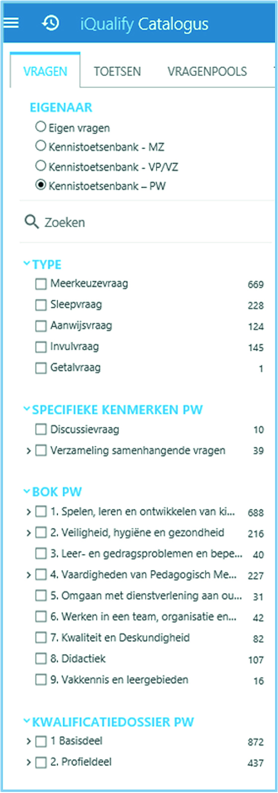
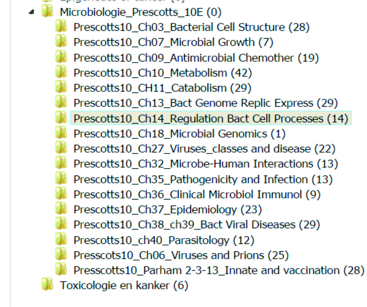
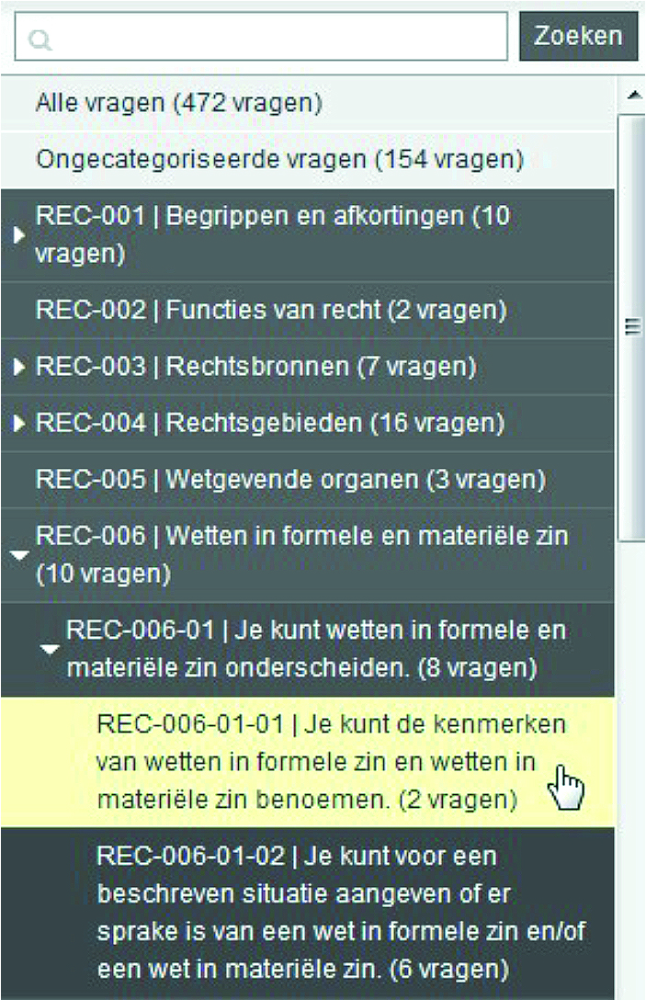
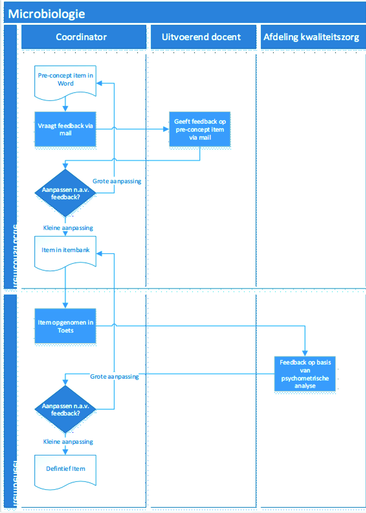

4 Toetssystemen
4.1 Veelgebruikte toetssystemen voor onderwijs
Deze paragraaf geeft een overzicht van de meest gebruikte toetssystemen voor het hoger onderwijs. De lijst is samengesteld door experts die betrokken zijn bij de ontwikkeling van dit handboek. De markt van toetssysteemleveranciers is dynamisch. Daarom is deze lijst niet compleet.
Veel gebruikte toetssystemen in Nederland:
Toetssystemen in Learning Management Systemen met beperkte itembankfunctionaliteit:
Itembanksystemen (Stand Alone programma’s) met directe itemexportfunctionaliteit:
Toetssystemen met vragen:
- SOWISO (Wiskunde)
- Grasple (Statistiek)
- Zeer Actieve Psychologie
- R/Exams (Statistiek)
- Drillster
- Quizlet
- ProProfs
- Itembanken van uitgeverijen, vaak behorende bij een specifiek studieboek of online leeromgeving (bijv. Pearson MyLab series, (McGraw Hill methoden, WebAssign e.d.)
4.2 Toetsstandaarden
4.2.1 QTI-standaard
In de afgelopen jaren is onder meer in SURF-verband onderzoek gedaan naar de interoperabiliteit en uitwisselbaarheid van vragen tussen verschillende systemen. In internationaal verband wordt voortdurend gewerkt aan de IMS QTI-standaard (Question and Test Interoperability) voor de uitwisseling tussen toetssystemen. Deze standaard zal niet op korte termijn alle uitwisselingsvraagstukken oplossen, omdat sommige systemen vraagtypen hebben, die andere niet hebben, zoals de meerdere punten in een afbeelding aanwijzen of ongelijke-matchvragen. Tegelijkertijd werkt QTI al wel in veel gevallen voor multiple choice toetsen. In de praktijk zien we dan ook dat een complexere samenwerking van meerdere instellingen voor de meeste deelnemende partijen betekent dat ze moeten werken in een ander systeem dan hun eigen instellingssysteem.
Als je bij een samenwerking niet in één itembanksysteem kan werken, beperk dan het te gebruiken vraagtype tot de meerkeuzevraag. Deze vorm is zo eenvoudig dat uitwisseling via QTI of platte tekst meestal probleemloos verloopt. Ga ervan uit dat metadata en media (afbeeldingen, geluid) niet (goed) meekomen als je items ex- en importeert.
Voer in de voorbereiding een proef uit met het uitwisselen van items. Zo kun je bepalen of het overzetten goed gaat of dat er conversiegereedschappen moeten worden gemaakt. Probeer zo veel mogelijk in hetzelfde systeem te werken, ook vanuit verschillende instellingen.
4.2.2 LTI en SCORM standaard
In de toetswereld wordt vaak gewerkt met de standaarden IMS LTI (Learning Tools Interoperability standard) en SCORM (Sharable Content Object Reference Model). Dit zijn géén uitwisselstandaarden voor items. Deze standaarden worden gebruikt om toetssystemen te koppelen aan andere systemen, zoals digitale leeromgevingen (Leer-managementsystemen (LMS) zoals Blackboard of Canvas).
Daarbij worden met name docent- en studentgegevens tussen de systemen automatisch uitgewisseld, kunnen toetsen vanuit het LMS worden gestart en worden de scores op toetsen teruggevoerd naar de cijferlijstfuncties in het LMS. Voor de eindgebruikers ontstaat een meer eenduidige beleving van het LMS en ze hoeven niet extra in te loggen.
4.3 Toetsgegevens
4.3.1 Toetsgegevens
Een krachtig middel om de itemkwaliteit te verbeteren, is het verzamelen van gegevens over items van afgenomen toetsen. In combinatie met de kwaliteitsverhoging door itembanken heb je een dubbele verbeterslag te pakken. Deze gegevens zeggen namelijk iets over de kwaliteit van de items en de mate waarin studenten presteren of over de kwaliteit van het onderwijs. Het is belangrijk om beschrijvende en psychometrische gegevens goed te onderscheiden. Zij hebben een heel verschillend karakter, dat moet passen bij het doel dat je nastreeft met de itembank.
Beschrijvende data
Eenvoudige beschrijvende data van items gaan om zaken zoals het aantal keren dat een item is afgenomen of beantwoord.
Op het niveau van een toets als geheel kunnen beschrijvende data gaan over hoe vaak een student een poging heeft ondernomen om een toets te maken, wanneer de poging is geweest, hoe de student scoort, wat de slagingspercentages zijn enzovoort. Deze data zijn afkomstig uit toetsservicesystemen.
De data kun je vertalen naar een grafische overzichtspagina voor docenten of studenten. Docenten krijgen een overzicht van de progressie van een groep studenten en de onderwerpen waarmee ze moeite hebben. Studenten krijgen inzicht in hun progressie en hun positie ten opzichte van groepsgenoten. Dit levert in feite managementinformatie op. Gebruik van data op deze wijze noemt men ook wel learning analytics.
Psychometrische data
Psychometrische gegevens zeggen iets over de moeilijkheidsgraad van items en in welke mate ze onderscheid maken of een student de stof wel of niet beheerst. Daarbij maakt het uit of je gebruik maakt van de klassieke testtheorie (KTT) of de item-response-theorie (IRT). In deze paragraaf leggen we beide theorieën kort uit.
De klassieke testtheorie (KTT)
De klassieke testtheorie gaat ervan uit dat de score op een toets bestaat uit de werkelijke score en een fout in de meting (ruis). Door statistische bewerkingen kan van één toets worden bepaald wat de betrouwbaarheid is van de toets, dat wil zeggen, in welke bandbreedte de werkelijke score van de student met een bepaalde mate van zekerheid ligt.
De belangrijkste psychometrische gegevens voor items binnen het concept van de klassieke testtheorie zijn:
- Betrouwbaarheid: de mate waarin de toets als geheel, dus alle items gezamenlijk, goed onderscheid maken in de mate van beheersingsgraad van de stof. Het is een maat van meetnauwkeurigheid en de mate waarin de score op een toets niet aan het toeval is te wijten. Volgens de literatuur moeten tentamens ten minste een waarde van 0,7 of hoger hebben en bijvoorbeeld selectietoetsen een waarde van 0,9 of hoger.
- p-waarde: de proportie correcte antwoorden van de studentenpopulatie. De p-waarde wordt vaak aangeduid als de moeilijkheidsgraad van een item, maar is in feite een graad van gemakkelijkheid. Bij open items wordt een optimum van 0,5 en voor meerkeuzevragen met vier alternatieven is dit 0,67. Hier kan ook nog de a-waarde worden genoemd. Dat is de proportie studenten uit de groep die een bepaalde afleider heeft gekozen.
- Rit-waarde: de correlatie tussen de score van de studenten op de item en de score op de toets als geheel. De rit-waarde is een maat voor het discriminerend vermogen van een vraag. Dat is de mate waarin het item onderscheid maakt tussen de studenten die de stof beter of slechter beheersen. De rir-waarde is een wat strengere maat voor het discriminerend vermogen, omdat de invloed van het item zelf op het discriminerend vermogen wordt weggelaten. Volgens de literatuur ligt het streven op een rit-waarde van ten minste 0,3. Waarden lager dan 0,1 worden als slecht beschouwd. Negatieve waarden verdienen direct aandacht. Hier komt de rat-waarde van pas. Dat is de mate waarin de keuze voor een bepaald incorrect alternatief samenhangt met de toetsscore.
Het kan waardevol zijn om psychometrische gegevens bij de items op te slaan. Sommige toetssystemen ondersteunen zelfs een automatische update van deze gegevens na iedere beantwoording door een student. Op zich aantrekkelijk, ware het niet dat ze alleen interpreteerbaar zijn per toetsafname. Onderling kun je ze alleen vergelijken als de afnamecondities identiek zijn. Psychometrische gegevens per toetsafname zijn wel zinnig.
De item-response-theorie (IRT)
Wil je weten wat de meer absolute moeilijkheidsgraad en het discriminerend vermogen van items zijn, dan biedt de item-response-theorie (IRT) uitkomst. IRT levert zogenaamde gekalibreerde items op. Om die te verkrijgen, worden de items afgenomen bij een grote steekproef onder een groep studenten met veel spreiding in kennis en vaardigheid. In het kalibratieproces wordt heel precies gemeten hoe items onderscheid maken tussen studenten op specifieke niveaus van moeilijkheid. Itembanken met items die op deze manier zijn ontwikkeld kun je gebruiken in zogenaamde adaptieve toetssystemen. De achterliggende technieken zijn zo complex dat ze alleen met ruime ontwikkelbudgetten kunnen worden gemaakt. Voorbeelden hiervan zijn de PABO-rekentoets (Wiscat), de Rekentuin (primair onderwijs) en de in ontwikkeling zijnde computer-adaptieve versie van de iVTG (interuniversitaire voortgangstoets geneeskunde). Ook geldt dat de items aan strengere eisen moeten voldoen dan bij klassieke toetsen, vooral voor wat betreft discriminerend vermogen (Linden, Linden, and Glas 2000).
Soms kiezen docenten in de voorbereiding voor adaptief toetsen, zonder zich voldoende te realiseren dat hiervoor complexe en kostbare IRT-technieken nodig zijn. Kies hier alleen voor als de projectgelden toereikend zijn.
Voor de ordening van de itembank heeft de keuze voor IRT niet zo heel veel consequenties. Het maken van een adaptieve itembank vergt meer kennis en middelen om de kalibratie uit te kunnen voeren, maar het resultaat kan worden opgenomen in een ‘gewone’ itembank. Er zijn voldoende items nodig, verspreid over de verschillende moeilijkheidsniveaus, met meer moeilijke items dan items met een gemiddelde moeilijkheidsgraad.
Voor een wat uitgebreidere handzame uitleg van de klassieke testtheorie en item-respons theorie, zie De Gruijter, D. N. M. (2008). Toetsing en toetsanalyse.
4.4 Itembanken
4.4.1 Inleiding
Digitale itembanken zijn een prachtige tool om de kwaliteit van toetsen te laten toenemen en de kosten te laten dalen. Wie gezamenlijk toetsvragen ontwikkelt, stemt doelen en processen af. Er is meer expertise en tijd beschikbaar per item (toetsvraag) voor ontwikkeling en kwaliteitscontrole. Dit alles komt de kwaliteit van de toetsen ten goede. Hergebruik van items kan de kosten doen dalen.
De coronacrisis heeft daarnaast ook laten zien dat itembanken een rol spelen in situaties waarbij het online toetsen risico’s met zich meebrengt. Met name in als toetsvragen gaan uitlekken of dat studenten ongeoorloofd samenwerken tijdens het maken van de toets. Itembanken bieden de mogelijkheid om deze risico’s te verminderen.
Het ontwikkelen, beheren en onderhouden van itembanken vraagt om goed projectmanagement. Met deze uitgave willen we laten zien hoe je een digitaal systeem opzet om items uit te wisselen met collega’s van binnen en buiten de instelling. In dit handboek bundelen we de kennis en kunde die instellingen, samenwerkingsverbanden van instellingen en SURF over dit onderwerp hebben opgedaan. Het helpt instellingen op weg die hun voordeel willen behalen met digitale itembanken. Het handboek bestaat uit een introductie, een stappenplan en een verdiepend deel.
Voor wie is deze uitgave?
Het handboek is bedoeld voor iedereen die een rol vervult in de processen rondom de ontwikkeling, het beheer en het onderhoud van een itembank en de items. Bijvoorbeeld:
- Docenten die items beter willen ordenen of willen ontwikkelen en uitwisselen met een collega
- Onderwijsadviseur die docenten ondersteunt of die trekker is van het inrichten van een itembank
- Een samenwerkingsverband dat gezamenlijk toetsmateriaal wil uitwisselen of gezamenlijk toetsen wil uitzetten
- Een landelijk overleg dat de kwaliteit van toetsen wil verhogen
- Functioneel beheerders van een toetssysteem dat wordt gebruikt voor een itembank
Scope
Het handboek richt zich op het ontwikkelen, beheren en gebruiken van itembanken binnen een opleiding, binnen één instelling, instellingsoverstijgend, binnen een bepaald domein of zelfs landelijk. Uitgangspunt is dat de processen in de basis hetzelfde zijn. Het handboek geeft geen uitgebreide beschrijving van bestaande itembanken of toetssystemen. Hiervoor kun je terecht in de SURF thema-uitgave Toets-en vragenbanken in het onderwijs.
Het ontwikkelen van itembanken kan onderdeel zijn van een groter implementatietraject van digitaal toetsen bij instellingen. Voor het implementeren van digitaal toetsen verwijzen wij naar enkele SURF- publicaties, zoals de handreiking Beleid voor digitaal toetsen, het stappenplan Digitaal toetsbeleid schrijven en het werkboek Veilig toetsen.
In dit handboek gaan we vooral in op het ontwikkelen van items (het itemontwikkelproces) en het beheer van items in een itembank. Een goede itembank vormt de basis voor goede toetsen. Over hoe je op basis van zo’n itembank goede toetsen ontwikkelt in een toetssysteem, zijn andere bronnen beschikbaar, zoals Toetsen in het hoger onderwijs Van Berkel, Bax, and Joosten-ten Brinke (2017).
Verantwoording
Deze uitgave is een bijgewerkte versie van de uitgave uit 2018. De special interest group (SIG) Digitaal toetsen heeft de uitgave – mede in het licht van de ervaringen tijdens de coronacrisis van 2020/2021 – kritisch bekeken, aangevuld en geactualiseerd. De oorspronkelijke publicatie is tot stand gekomen in nauwe samenwerking met itembankexperts uit diverse instellingen, de SIG Digitaal Toetsen, Cito, 10voordeLeraar en Prove2Move. Het handboek is gebaseerd op de ervaringen van de betrokken experts met het ontwikkelen van itembanken. Verder hebben we gebruikgemaakt van verzameld materiaal van onder andere SURF en beschikbare literatuur op dit gebied.
Zie het colofon voor een overzicht van alle betrokkenen die hebben bijgedragen aan dit handboek. Neem gerust contact op met de auteurs en/of de deskundigen die een inhoudelijke bijdrage hebben geleverd aan het handboek voor meer informatie.
Definities en begrippen
Voor het gebruik van dit handboek is een goed begrip van een aantal termen essentieel. We beschrijven kort de componenten van een digitaal toetssysteem en laten zien hoe ze zich verhouden tot de itembank.
Wat is een itembank?
Een itembank is een verzameling van items ofwel vragen (in het vervolg van dit handboek noemen we ze items). Een itembanksysteem is het digitale systeem waarin de verzameling van items is opgeslagen en waarmee ze beheerd kunnen worden. Een itembanksysteem kan meerdere itembanken bevatten. Als wij in dit werkboek spreken over itembank bedoelen we het itembanksysteem (de digitale itembank).
Definitie
Een itembank is een verzameling van items voor een bepaald toetsdoel. Een itembank heeft daarvoor een bepaalde ordening, meestal op basis van metadata en in de vorm van een hiërarchische structuur. Een itembanksysteem is het digitale systeem waarin de verzameling van items is opgeslagen en waarmee ze beheerd kunnen worden. Een itembanksysteem kan verscheidene itembanken bevatten.
In de itembank worden de vragen logisch ingedeeld. Er vindt versiebeheer plaats en er kunnen allerlei metadata worden opgeslagen over de inhoud, het vraagtype, het niveauen over andere kenmerken. Je kunt er ook psychometrische gegevens in opslaan, zoals de moeilijkheidsgraad en het discriminerend vermogen van items. Soms draaien de programma’s van een itembanksysteem lokaal op een computer. Andere itembanken bestaan uit internetomgevingen. De database en de applicatie worden vanuit de cloud benaderd. Verschillende mensen kunnen tegelijkertijd werken in zo’n cloudsysteem.
Nice to know
Waarom worden ‘toetsvragen’ door toetsdeskundigen eigenlijk vaak items genoemd?
In de jaren ‘30 werd er in de Verenigde Staten gewerkt met gestandaardiseerde toetsen en rudimentaire bestanden met vragen. Al snel ontstond een beroepsgroep met bijbehorend beroepsjargon. ’Test questions’ werd ‘test items’. In Nederland hebben we dit woordgebruik overgenomen en ‘vernederlandst’ naar ‘ietums’ in plaats van ‘aitums’.
Belangrijke begrippen m.b.t. itembanken
Formatief toetsen: Toetsing waarbij het leren van de toets voorop staat, meestal zonder cijfers, vaak met feedback per toetsvraag of toets. Door met toetsopgaven aan de slag te gaan en te leren van fouten en feedback wordt het leerproces gestimuleerd. Er is geen sprake van een minimaal te behalen niveau.
Psychometrische gegevens: Deze data zeggen iets over de moeilijkheidsgraad van vragen en geven aan in welke mate ze onderscheid maken of een student de stof wel of niet beheerst. Psychometrische gegevens kunnen worden opgeslagen in de itembank bij het item waarop ze betrekking hebben.
Summatief toetsen: Toetsing waarbij het zo nauwkeurig mogelijk meten van een bepaald niveau van vaardigheid voorop staat. De behaalde score wordt gebruikt voor formele toekenning van een behaald studieresultaat, zoals studiepunten of een diploma.
Toetskwaliteit: Het geheel van aspecten rondom toetsing dat de mate van transparantie, betrouwbaarheid en validiteit van toetsing behelst. Transparantie neemt bijvoorbeeld toe als er inzicht is in de wijze waarop items worden gemaakt. Betrouwbaarheid neemt bijvoorbeeld toe als items beter onderscheid maken tussen studenten met verschillende mate van beheersing van de stof of vaardigheid. Validiteit neemt toe als de items beter en vollediger de beoogde kennis of vaardigheid meten.
Samenwerkingsverbanden
In het handboek refereren we naar een aantal Nederlandse instellingsoverstijgende itembanken. We hebben dankbaar gebruik gemaakt van hun kennis en ervaring. Het gaat om de volgende samenwerkingsverbanden:
deKennistoetsenbank MBO
Voor de MBO-opleidingsprofielen Zorg en Welzijn, Maatschappelijk Werk en Verpleegkunde/Verzorgende IG heeft deKennistoetsenbank MBO van Prove2Move itembanken beschikbaar van duizenden items elk. DeKennistoetsenbank MBO is een methode-overstijgend digitaal systeem dat leren ondersteunt met goede kennisvragen. Prove2move is een coöperatie van de drie ROC’s (Landstede, Deltion College en ROC van Twente).
IVTG
De interuniversitaire VoortgangsToets Geneeskunde (iVTG) is een meetinstrument om de kennisprogressie van studenten geneeskunde gedurende hun studie te meten. Het betreft een interuniversitair samenwerkingsverband, bestaande uit zes UMC’s.
10voordeleraar
Het programma 10voordeLeraar is onder regie van de Vereniging Hogescholen ontwikkeld en biedt landelijke kennisbases, verplichte kennistoetsen en een peer-review-systematiek voor alle lerarenopleidingen.
Sharestats
Het doel van dit project is om een vrij toegankelijk uitgebreide verzameling leermaterialen over statistiek te bieden. Door meta-datering van het leermateriaal kunnen docenten uit de vakcommunity naar behoefte een selectie van statistiekopgaven kiezen en gebruiken in het eigen onderwijs. De vijf partners van het projectteam (UvA Psychologie en Pedagogische en Onderwijswetenschappen, VU Sociale Wetenschappen (FSW), VU Gedrags- en Bewegingswetenschappen (FGB), UU Sociale Wetenschappen en EUR Psychologie/Pedagogiek) vormen de kern van de vakcommunity.
In 5 stappen naar een itembank
In de praktijk ontstaan itembanken soms zonder bewust plan. Een uitprobeersel op kleine schaal groeit uit tot iets omvangrijks. Een dergelijke aanpak brengt het risico met zich mee dat de itembankontwikkeling in een later stadium stagneert, bijvoorbeeld door tijdgebrek of personele wisselingen. Het advies in deze is ‘bezint eer ge begint’. Werk volgens beheerste stappen. Te snel gaan heeft mogelijk later consequenties voor het draagvlak of kan zelfs het project doen mislukken.
Wij onderscheiden vijf stappen voor het ontwikkelen en gebruiken van een itembank. Binnen iedere stap moet je voor een aantal zaken zorgen. Deze zaken zullen soms gelijktijdig om aandacht vragen, of in een andere volgorde dan hier beschreven. In elke stap wordt het resultaat, een in gebruik genomen itembank, concreter gemaakt; er wordt van grof naar fijn gewerkt.
Deel 2 van het handboek, het Stappenplan, neemt je mee door de verschillende stappen. Soms heb je daarvoor theoretische kennis nodig. Daarom verwijzen we regelmatig naar deel 3 van het handboek, de Verdieping. Dit deel bevat meer achtergrondinformatie voor het opzetten van een itembank.
Tip Geen tijd om het hele handboek door te nemen? Hou dan in ieder geval de succesfactoren voor het ontwikkelen, beheren en gebruiken van een itembank uit hoofdstuk 4 bij de hand.
De plek van een itembank binnen het digitale toetssysteem
Met een digitaal toetssysteem bedoelen we software die het digitale toetsproces faciliteert. We maken onderscheid tussen een aantal kerncomponenten: auteurs- omgeving, itembank, afspeelomgeving en analysetool. Deze componenten bespreken we aan de hand van de toetscyclus. Niet alle stappen uit de toetscyclus worden ondersteund door digitale toetssystemen. In figuur (ref?)(fig:ToetsCyclus) is te zien hoe de componenten van een digitaal toetssysteem aansluiten op de toetscyclus.
Met een digitaal toetssysteem bedoelen we software die het digitale toetsproces faciliteert. We maken onderscheid tussen een aantal kerncomponenten: auteurs- omgeving, itembank, afspeelomgeving en analysetool. Deze componenten bespreken we aan de hand van de toetscyclus. Niet alle stappen uit de toetscyclus worden ondersteund door digitale toetssystemen. In figuur (ref?)(fig:toetscyclus) is te zien hoe de componenten van een digitaal toetssysteem aansluiten op de toetscyclus.
De itembank vormt de centrale component waarin de items worden opgeslagen. De bewerking en het afspelen van de items vindt plaats in andere systemen, die vervolgens de resultaten teruggeven aan de itembank. Bij de volgende onderdelen van de toetscyclus speelt de itembank een rol:
Het ontwerp van de toets (ook wel toetsspecificatie) gaat over aspecten als het doel van de toets, te toetsen onderdelen, de keuze voor formatief of summatief toetsen en ‘wijze van toetsing’. In het ontwerp worden dus nog geen items gemaakt.
Een toets wordt samengesteld vanuit een verzameling items. Hiervoor wordt meestal een specificatietabel gebruikt, ook wel toetsmatrijs of blauwdruk van de toets genaamd. Hierin is vastgelegd hoeveel items, welke vraagtypen en welke onderwerpen van welke aard, kennis, of toepassing in de toets komen.
De ontwikkeling (constructie) van de items vindt plaats in de auteursomgeving van een toetssysteem. De antwoorden in geval van gesloten vragen worden hierin opgenomen en soms ook die van de open vragen.
Toetssoftware biedt voor online toetsafname een afspeelomgeving aan. Deze omgeving controleert de identiteit van de student door middel van een inlogproces, biedt de student een toets aan en slaat de antwoorden van de student op.
Het nakijken van de toets hangt af van de gekozen vraagtypen. Antwoorden van gesloten vragen worden doorgaans zonder menselijke tussenkomst beoordeeld en gescoord. De itemontwikkelaar (de docent) heeft hierbij vooraf het correcte antwoord ingegeven. Open vragen moeten worden nagekeken, waarbij systemen bijvoorbeeld ‘blind’ nakijken mogelijk maken en ‘vraag-voor-vraag’ nakijken, eventueel met behulp van ondersteunende software.
Sommige softwarepakketten bevatten een analysetool voor toetsanalyse, maar analyseren kan ook met behulp van een download van een gegevensbestand en een bewerking hierna in bijvoorbeeld Excel of SPSS. Toetsanalyse is veelal gericht op het bepalen van de betrouwbaarheid van toetsen en het opsporen van items die van onvoldoende kwaliteit zijn.
Succesfactoren
Het ontwikkelen en gebruiken van een itembank kan complex zijn. De onderstaande succesfactoren leveren een belangrijke bijdrage aan de levensvatbaarheid van een itembank. Neem ze in acht, ook bij een relatief eenvoudige samenwerking. Deze factoren lopen als een rode draad door het handboek.
- Bezint eer ge begint: neem de tijd bij de start, schat de haalbaarheid goed in en vind de balans tussen een projectmatige aanpak en laten ontstaan. Kies een werkwijze die past bij jouw situatie.
- Stel een opdrachtgever aan en zorg dat het eigenaarschap van begin af aan goed belegd is. Zonder een opdrachtgever of afspraken over eigenaarschap is de kans op mislukking groot.
- Bepaal voor het ontwikkelen van de itembank welke stappen je wilt doorlopen en welke resultaten je per stap wilt bereiken.
- Bepaal het doel van je itembank en geef de itembank een duidelijke rol in het onderwijs. Houd hieraan vast. Draag deze visie regelmatig uit.
- Wees reëel en manage verwachtingen: de ideale itembank ontstaat niet in één dag en misschien zelfs wel helemaal nooit. De ideale inrichting kun je niet vanachter je bureau bedenken. Durf dingen uit te proberen.
- Kijk om je heen, er is al veel ontwikkeld. Vind het wiel niet opnieuw uit. Betrek deskundigen.
- Draagvlak is essentieel.
- Docenten die elkaar kennen en vertrouwen en die het doel van de itembank delen, zijn een randvoorwaarde voor succes; steek energie in het leren kennen van elkaar.
- Zorg voor goede begeleiding en ondersteuning van docenten.
- Het bestaan van een netwerk van mensen die al samenwerken en kennis uitwisselen vergroot de kans op succes aanzienlijk.
- Begin klein met de itembank en probeer verschillende inrichtingen en metadatamogelijkheden uit. Blijf aanpassen totdat de juiste inrichting en werkwijze is gevonden. Houd het eenvoudig en dicht bij de dagelijkse praktijk.
- Onderschat de aard en omvang van de werkzaamheden en/of het project niet. Het is moeilijke materie om te doorgronden. Gedrag en werkwijzen van mensen veranderen gaat niet vanzelf.
- Wees je bewust van technische beperkingen als je over instellingsgrenzen heen aan een itembank werkt.
4.4.2 Stappenplan
Stappenplan
- Voorbereiding
- Formuleer het doel en onderzoek de haalbaarheid van de itembank.
- Oriënteer je op toetssystemen en uitwisselbaarheid.
- Verdiep je in omvang en vraagreproductie.
- Maak een eerste kosten- en batenanalyse.
- Plan van aanpak
- Maak een plan van aanpak, waarin je beschrijft:
- het doel;
- het resultaat (wat hebben we als we klaar zijn?);
- hoe je denkt dit te realiseren.
- Ontwerp
- Orden de vragen.
- Organiseer de processtappen en bepaal rollen en rechten.
- Stel kwaliteitseisen vast en check of het systeem hieraan voldoet.
- Kies een toetssysteem.
- Leg afspraken over omvang en vraagproductie vast.
- Regel de financiën.
- Zorg voor een juridische verankering van het project.
- Organiseer het beheer van de itembank.
- Pilot
- Ontwikkel de items.
- Richt de itembank in en probeer uit.
- Realisatie
- Neem de itembank in gebruik.
- Zorg voor een toekomstbestendige itembank.
Stap 1: Voorbereiding
Begin met het formuleren van het doel van de itembank. Denk na over de rol van de itembank binnen het onderwijs, de mogelijke fasering en het eigenaarschap van de itembank. Wie heb je nodig? Hoe kun je stapsgewijs een itembank ontwikkelen die meerwaarde heeft voor het onderwijs en langere periode ‘in de lucht’ blijft? Zie ook H3.1.
Ga na of het ontwikkelen van een itembank past binnen het beleid van de instelling en of het de onderwijsvisie ondersteunt. Past het binnen het digitale toetsbeleid? Welke kwalitatieve en kwantitatieve doelen wil jouw instelling met digitaal toetsen bereiken? Zorg dat je het doel van jouw itembank laat passen binnen dit beleid. Dit maakt de itembank kansrijker. Om een idee uit te werken zal er commitment nodig zijn in de vorm van tijd en geld. Iedere instelling regelt dit anders. Vaak gaat het om een bestuurlijk traject, waarbij diverse mensen praten/lobbyen op operationeel, tactisch en strategisch niveau. Er zijn meestal richtlijnen en procedures beschikbaar voor het opstarten van een project binnen een instelling. Denk bijvoorbeeld aan innovatiegelden die via onderwijsprijzen of stimuleringsmaatregelen beschikbaar kunnen komen. Mogelijk moet je bijvoorbeeld een startnotitie of projectopdracht formuleren om de middelen te regelen. Het kan zijn dat er al wordt gevraagd naar een initiële inschatting van de kosten ten opzichte van de baten.
Het is aan te raden om tijdens de voorbereiding ten minste de volgende zaken te bepalen en te beschrijven:
- De huidige situatie en de gewenste situatie.
- Het doel van de itembank. Waarom is het een goed idee? Wat hebben studenten eraan? Maak duidelijk hoe de itembank zich verhoudt tot andere beleidsdocumenten, bijvoorbeeld het digitaal toetsbeleid en het onderwijsbeleid.
- Welk resultaat ligt er als het project klaar is? Hoe ziet het onderhoud en beheer er globaal uit?
- Vanuit welke theorie worden de items ontwikkeld? In de voorbereiding bedenk je op basis van welke theorie je aan de slag gaat: de klassieke testtheorie (KTT) of de item response theorie (IRT). Welke vraagtypes wil je gebruiken en hoe wordt er met feedback omgegaan? Keuzes over feedback en vraagtypes zijn van invloed op het eindresultaat. Zie ook § 3.6.4 en § 3.7.3.
- Hoeveel tijd, geld en doorlooptijd is er nodig voor dit project?
- Bepaal de haalbaarheid van het project: voer eventueel een apart haalbaarheidsonderzoek of vooronderzoek uit.
- Bepaal wie de opdrachtgever en/of de uiteindelijke eigenaar van de itembank is. Stel vast wie je nodig hebt om de itembank te ontwikkelen. Zie ook H3.5.
Haalbaarheidsonderzoek
Een mogelijke tussenstap in de voorbereiding van je itembankproject is een onderzoek naar de haalbaarheid ervan. Hierin werk je één of meerdere opties voor het inrichten van een itembank uit. Kies welke optie het beste is voor jouw situatie. Kijk naar de volgende aspecten:
- Inhoud: welke overeenkomsten zijn er tussen de items die je in de itembank wilt opnemen? Is er een gezamenlijke ordening te ontdekken? In hoeverre denken de docenten dat zij consensus kunnen bereiken over de inhoud van het vak en de items? Je moet dit weten om je aanpak te bepalen. Bij uiteenlopende meningen is er meer tijd nodig voor dit onderdeel. Zie ook H2.3.
- Kwaliteit: wat is de kwaliteit van de toetsen eigenlijk op dit moment? Wat zijn de p-waarden en rit-waarden? Hoe acceptabel is dit? Welke verbeterslag willen we realiseren met de itembank?
- De keuze voor het kopen of zelf ontwikkelen van de items.
- Wat is er al op de markt aan itembanken? Check oplossingen buiten de instelling, bijvoorbeeld het inkopen van items van een externe commerciële partij.
- Is er een mogelijkheid om aan te sluiten bij een bestaand samenwerkingsverband dat al een itembank ontwikkelt?
- De keuze voor het kopen of zelf ontwikkelen van de items.
- De beoogde omvang van de itembank.
- Hoeveel items zijn er al binnen de instelling die kunnen worden gebruikt?
- Hoeveel items heb je naar verwachting nodig? Zie ook H3.3.
- Techniek (toetssystemen en itembanksystemen): Ga na wat er al beschikbaar is binnen de instelling aan itembanksystemen en itembanken die je kunt gebruiken. Zoek de afdeling op die verantwoordelijk is voor het beheer en gebruik van ICTO-applicaties en specifiek de toetsapplicaties. Moet er iets door de instelling worden aangeschaft? Zie ook H3.2.
- Organisatie: is er voldoende draagvlak voor de optie(s)? Ga in gesprek met organisaties die ervaring hebben met het inrichten van itembanken.
- Financiën: zet per optie de kosten en baten op een rij en neem de volgende zaken in acht.
- Kan er voldoende tijd en geld worden vrijgemaakt voor het ontwikkelen van de itembank?
- In hoeverre zal de itembank de prijs-kwaliteitverhouding van items kunnen verbeteren?
- Kun je projectgeld of subsidiegeld aantrekken? Zie ook H3.4.
Afronding voorbereidingsstap
Verwerk alle gegevens tot een opdrachtformulering en verkrijg goedkeuring van je opdrachtgever om een plan van aanpak te maken.
Wat heb je aan het eind van deze stap?
- Resultaat: inzicht in het doel, de haalbaarheid en de globale aanpak van het idee.
- Een go/no go van je opdrachtgever voor de volgende stap.
Stap 2: Plan van aanpak
In deze stap leg je vast hoe de itembank eruitziet aan het eind van het project. Je maakt een plan van aanpak om dit resultaat te bereiken.
Stel jezelf de vraag: wat hebben we als we klaar zijn? Het antwoord is afhankelijk van het doel dat de itembank zal vervullen in het onderwijs. Formuleer met de betrokkenen eisen en wensen ten aanzien van de itembank. Eisen moeten verplicht worden gerealiseerd; wensen wil men graag realiseren, maar zijn niet noodzakelijk om tot een goed resultaat te komen. In je plan van aanpak zet je beide op een rij.
Het kan zijn dat een organisatie projectmatig werken faciliteert en dat er wordt gewerkt aan de hand van een projectmanagementmethode, zoals Prince II. Mogelijk zijn er zelfs projectleiders beschikbaar voor het trekken van grotere projecten. In dat geval zijn er binnen de instelling procedures gangbaar rondom werkwijze, fasering en besluitvorming. Check wat er beschikbaar is binnen de instelling over projectmatig werken. Grijp waar mogelijk terug op standaarddocumenten, zoals een sjabloon voor een plan van aanpak. Geef de stappen uit het stappenplan hierin een plek.
Zorg ervoor dat je plan van aanpak ten minste de volgende zaken zo gedetailleerd mogelijk beschrijft:
- Het doel en resultaat.
- Hoe je tot het resultaat wilt komen.
- De rol van opdrachtgever en wie dit op zich neemt. Idealiter is dit de toekomstige eigenaar van de itembank. Plan momenten in om met hem of haar de aanpak en plannen te bespreken. Stel vast waar je zijn of haar hulp nodig hebt.
- Bedenk wie je wanneer tijdens het project en erna nodig hebt. Beschikken zij over de juiste kennis en kunde? Denk aan de volgende expertises: opdrachtgever, projectleider, toetsdeskundige, psychometrist, functioneel beheerder, jurist en docenten.
- Bepaal hoe je draagvlak creëert. Hoe ga je ervoor zorgen dat de itembank daadwerkelijk wordt gebruikt? Hoe kun je docenten en studenten ertoe aanzetten om de nieuwe werkwijzen in de praktijk te brengen? Ga hierover met ze in gesprek. Bedenk hoe je het belang van de itembank ook op de tactische en strategische agenda’s krijgt. Wie zijn de belanghebbenden?
- Kosten en baten: geef een inschatting van wat het ontwikkelen van de itembank kost en wat het de komende jaren zal opleveren.
- Kwaliteit: hoe kom je tot een itembank van voldoende kwaliteit?
- Planning: welke fasering heb je voor ogen? Welke doorlooptijd heb je nodig?
- Bedenk hoe je het gestelde doel behaalt en hoe je het proces om daar te komen kunt beheersen en zo nodig bijstellen.
Wat heb je aan het eind van deze stap?
Het resultaat van deze stap is een plan van aanpak, waarin het doel, het resultaat en hoe je dit denkt te realiseren zo concreet mogelijk zijn gedefinieerd. Laat het plan van aanpak goedkeuren door de opdrachtgever. Door het plan van aanpak is de benodigde tijd van mensen afgestemd met leidinggevenden. Zo zorg je voor commitment en draagvlak.
Stap 3: Ontwerp
Aan het einde van deze stap ligt er een ontwerp dat aan de opdrachtgever duidelijk maakt wat hij krijgt. Daarbij weten de medewerkers van de volgende stap, het testen in een pilot, wat er moet worden gemaakt.
In het ontwerp worden de volgende zaken bepaald en vastgelegd:
- Ordening van items
- Itemontwikkelproces
- Itemkwaliteit
- Systeem
- Productie en planning
- Financiën
- Juridische aandachtspunten
- Beheer
Leg de afspraken die worden gemaakt per aandachtspunt duidelijk vast. De resultaten van elk onderdeel tellen op naar het totale ontwerp van de itembank en hangen dus ook met elkaar samen.
Ordening van items
Breng in kaart in welke mate de vakgebieden overeenkomen. Laat de betrokken do- centen bepalen in hoeverre zij op dezelfde manier naar een vak of vakgebied kijken. Ze gaan met elkaar de diepte in om vast te stellen wat er op onderwerpniveau en vraag- constructie-niveau in de itembank wordt opgenomen. Deze fase is moeilijk, omdat er vaak verschillen zijn. Het is zaak om pragmatisch te blijven. Accepteer dat er mogelijk wat aanpassingen in het onderwijs noodzakelijk zijn, bijvoorbeeld door het kiezen van een nieuwe methode of het aanpassen van het gebruik van specifieke namen voor variabelen of concepten.
- Vragen die aan de orde komen: Hoe schrijf je de items uit? Wat vind je relevant of opleidingsspecifiek? Hoe zien de toetsmatrijzen eruit?
- Het kan zijn dat er verschillen zijn op notatie-of illustratieniveau. Hoe ga je hiermee om?
- Bepaal welke hiërarchische structuur de itembank krijgt en welke metadata wenselijk zijn. Zie ook H3.6.
Itemontwikkelproces
- Bepaal wie welke stappen in het itemontwikkelproces doorloopt om de toetskwaliteit te borgen.
- Stel een indicatie op voor de verwachte ontwikkeltijd per item.
- Kijk naar de huidige processtappen. Scherp ze indien nodig aan of breid ze uit.
- Moeten al bestaande items opnieuw bekeken worden en worden gekeurd? Hoeveel? Zie ook H3.5.
Itemkwaliteit
- Bepaal en documenteer vuistregels waaraan de items moeten voldoen. Denk ook aan regels over taalgebruik en bronvermelding.
- Betrek waar mogelijk itemexperts (niet iedereen maakt goede items) of een psychometricus.
- Plan review-begeleidingssessies onder leiding van een vraagexpert. Laat docenten een flink aantal bestaande voorbeelditems aanleveren. Bespreek gezamenlijk de variatie tussen de vakken, de wijze van vraagstelling en de constructiefouten in deze items. Hierdoor krijgen de betrokkenen ideeën over uniformering van vraagformulering en vraagvormen.
- Bedenk hoe je de gewenste kwaliteitsverbetering kunt meten.
- Begin met het einde in gedachten: inventariseer welke gegevens je uit de itembank wilt kunnen halen ten behoeve van het onderwijskundige proces. Zie ook H3.7.
Systeem
- Bij een eenvoudig itembankproject: bekijk welk toetssysteem de instelling gebruikt. Ondersteunt het systeem het gewenste itemontwikkelproces, de gewenste rollen en rechten, de hiërarchische structuur en metadata?
- Bij een complex itembankproject: indien er meerdere systemen in gebruik zijn, maak een afweging welk systeem het meest geschikt is voor het doel.
- Past het gewenste itemontwikkelproces in het systeem? Dan kun je bepalen hoeveel werk het is om in te richten. Past het niet, bepaal dan of je het proces kunt aanpassen, of dat je liever onderzoekt of de structuur van het systeem kan worden aangepast.
- Geef aan wat er nodig is om de veiligheid van de items in de bank te waarborgen.
- Hoe schaalbaar moet het systeem zijn, nu en in de toekomst – voor zover je kunt overzien? Zie ook H3.2.
Productie en planning
- In de voorbereiding heb je grofweg bepaald hoeveel items je nodig hebt in de itembank. Zet dit aantal uit in tijd (korte en lange termijn). Hoeveel vraagt dit van medewerkers?
- Hoeveel items zijn al beschikbaar bij de verschillende partijen en kunnen met weinig moeite bij elkaar gebracht worden?
- Bedenk hoe je het vullen van de itembank aanpakt. Bepaal de periode, eventuele deadlines (wanneer vinden de eerste toetsen plaats?) en streefproductie door opschaling (batches).
- Bepaal wanneer je een kwaliteitsreview doet op basis van toetsstatistieken en psychometrische gegevens. Zie ook H3.3.
Financiën
- Werk de inschatting van de kosten en baten uit de voorgaande stappen verder uit. Bedenk hoe de initiële ontwikkeling zal worden gefinancierd.
- Stel vast hoe je de exploitatie van de itembank na afronding van het project gaat financieren. Stel een exploitatieplan op. Mogelijkheden om inkomsten te genereren zijn bijvoorbeeld:
- Instellingen nemen een abonnement op de itembank, om deze vervolgens kosteloos aan studenten aan te bieden.
- Studenten betalen voor toegang tot de itembank.
- Betrek de opdrachtgever van de itembank bij het opstellen van het budget voor exploitatie. Zorg dat hij of zij zich hiervoor verantwoordelijk voelt. Zie ook H3.4.
Juridische aandachtspunten
- Stel vast wie de eigenaar is van de items in de itembank.
- Bedenk hoe je wilt omgaan met materiaal van derden dat auteursrechtelijk beschermd is, zoals afbeeldingen bij items.
- Bepaal wat je nodig hebt op het gebied van de bescherming van persoonsgegevens.
- Overleg welke afspraken je over de samenwerking met betrokken partijen wilt vastleggen. Leg ten minste vast hoeveel uur wordt geleverd voor itemontwikkeling. Betrek een juridisch expert bij instellingsoverstijgende samenwerkingen om te beoordelen wat de beste samenwerkingsmogelijkheid is en wat hierbij komt kijken. Zie ook [H3.8](#juridische-aandachtspunten].
Beheer itembank
- Bedenk hoe je de gebruikers, zoals docenten en studenten, het beste kunt ondersteunen om het eindproduct in gebruik te nemen. Ga hiervoor met hen in gesprek en luister naar argumenten. Laat hen juist bij het ontwerp meedenken.
- Bedenk wie of wat je nodig hebt om de itembank te beheren. Wie heb je nodig op het gebied van ondersteuning en beheer na het project?
- Maak instructiemateriaal en plan instructiemomenten.
- Ga in gesprek met de eventueel beschikbare toets- en beheerorganisatie in de instelling en stem de werkwijze af. Zie ook H3.5.
Wat heb je aan het einde van deze stap?
Een ontwerp van de itembank. Alle tussenresultaten per onderdeel tellen op tot het ontwerp van de itembank:
- Structuur: een landkaart/tabel met de onderwerpstructuur die is overeengekomen en afspraken omtrent bijvoorbeeld notatiewijzen.
- Organisatie: aanpak en gedocumenteerde organisatorische afspraken (beschrijving van de toets- en beheerorganisatie) over hoe de itembank zal worden beheerd, inclusief besturing van de itembank, inclusief benodigde kennis en kunde van betrokkenen (een opleidingsplan).
- Systeem: inrichtingsplan systeem; dit betreft workflow (van het itemontwikkel- proces) en de metastructuur (hiërarchische structuur en metadatastructuur).
- Kwaliteit:
- afspraken over de gewenste kwaliteit van de items, onder andere een beschrijving van richtlijnen en criteria waaraan de items moeten voldoen.
- beschrijving van het werkproces voor itemontwikkeling, inclusief beheer, analyse en de rollen en rechten.
- een indicatie van de tijd die het vergt om een item te ontwikkelen.
- een indicatie van de toename en consistentie van de itemkwaliteit.
- Productie en planning: aanpak en gedocumenteerde organisatorische afspraken hoe de itembank ‘te vullen’ en op niveau te houden.
- Financieel: een businesscase en exploitatieplan.
- Juridisch: vastgelegde afspraken over de juridische aspecten van de items en het systeem
Stap 4: Pilot
Het ontwerp is klaar. Nu richt je de itembank in en maak je hem gereed voor gebruik. In deze stap wordt een itembankstructuur opgezet, metadata-categorieën ingevoerd, accounts aangemaakt, bestaande items geconverteerd, rollen en rechten verdeeld.
Voer een pilot uit waarbij je een eerste toetsperiode volledig draait. Je test in de pilot of de keten van activiteiten werkt. Maak zoveel items dat je een eerste toetsperiode kan afdekken. Check of de gemaakte afspraken haalbaar zijn. Kloppen de uitgangspunten? Weet iedereen welke rollen en rechten hij of zij heeft? Test of de systemen en de werkwijze technisch werken. En worden de items door studenten gebruikt zoals beoogd? Worden formatieve toetsen wel gebruikt? Evalueer en pas aan indien nodig.
De volgende activiteiten vinden plaats in de pilot:
- Richt de itembank technisch in en test hem.
- Indien er sprake is van een conversie van oude items naar de nieuwe situatie: voer de conversie uit met een klein aantal items.
- Leid medewerkers op.
- Voer een eerste partij van items in op basis van de afgesproken werkwijze
- Stel een toets samen met de items.
- Bied de toets aan in een onderwijsonderdeel.
- Evalueer het gebruik en de resultaten van de toets.
- Zet een administratief systeem op voor personen en financiën (bijvoorbeeld als er is gekozen voor een vergoeding per geconstrueerde item of coördinatorschap).
- Evalueer het gebruik en de werkwijzen voor het aanmaken van items. Kan de kwaliteit beter onder controle worden gebracht? Kloppen de uitgangspunten, bijvoorbeeld de ingeschatte tijd voor vraagontwikkeling?
- Waar nodig: stuur bij, pas gemaakte afspraken aan, stel uitgangspunten bij.
Wat heb je aan het eind van deze stap?
- Een gedocumenteerde evaluatie van de pilot op de diverse inrichtings- aspecten en vanuit het oogpunt van de gebruikers inclusief een verbeterplan.
- Een ingerichte en geteste itembank.
Stap 5: Realisatie
In deze stap neem je de itembank in gebruik. Ook onderneem je actie om het gebruik van de itembank te laten toenemen.
De pilot heeft een aantal lessen opgeleverd. Op basis hiervan kun je grootschaliger te werk gaan. Tijdens de realisatie worden grotere aantallen items gemaakt en worden de toetsen vaker ingezet.
Aandachtspunten:
- Zorg dat de eigenaar van de itembank zich blijft bezig houden het volgen en bewaken van de doelstellingen en resultaten.
- Bespreek de borging regelmatig met de eigenaar van de itembank. Maken de itemontwikkelaars voldoende items? Zijn de items van goede kwaliteit? Hoe kun je zorgen voor zo min mogelijk variatie in kwaliteit? Is iedereen tevreden met het proces? Kan de docent gemakkelijk toetsen samenstellen? Vinden studenten de ontwikkelde formatieve items en feedback aantrekkelijk?
- Ga na of de businesscase haalbaar blijft. Zie ook H3.7.
Nazorg
De itembank is geïmplementeerd. Het proces is in werking, iedereen vervult zijn taak en gebruikt de itembank op de afgesproken manier. Er is een formele eigenaar die het doel van de itembank in de gaten houdt. De itembank heeft een plek gekregen in de organisatie: er zijn mensen die ervoor zorgen dat de itembank blijft bestaan en goed wordt gebruikt. De onderwijskundige meerwaarde is duidelijk voor nu en in de toekomst.
Aandachtspunten:
- Zorg dat het onderhoud van de itembank is belegd, bijvoorbeeld bij een functioneel beheerder en de redacteur(s).
- Zorg dat de financiële administratie functioneert zoals voorzien voor de exploitatiefase. Blijf in de gaten houden of de exploitatie een passende toekomstige begroting oplevert.
- Zorg voor goede documentatie, zoals:
- een beschrijving van de inzet van de itembank in de cursus.
- een beschrijving van het onderhoud van de itembank voor de toets- en beheerorganisatie.
- een beschrijving van het onderhoud van de itembank voor een eventueel coördinatieteam en voor elk auteursteam per itembank. Zie § 3.7.2.3.
- een standaard instructieprogramma voor gebruik van het itembanksysteem voor nieuwe medewerkers.
- aanpassingen aan het instructieprogramma bij updates van en aanpassingen aan het itembanksysteem.
4.4.3 Verdieping
Waarom (samenwerken aan) een itembank?
Tijdens de voorbereiding leg je het doel van de itembank vast. In dit hoofdstuk beschrijven we een aantal mogelijke manieren waarop een itembank impact kan hebben op het onderwijs. We gaan ook nader in op de voordelen van samenwerken aan een itembank. Ten slotte bekijken we welke factoren binnen het vakgebied bijdragen aan een succesvol gezamenlijk itembankproject.
Waarom een itembank?
Bepaal welke rol de itembank zal gaan spelen in het leer- en toetsproces. Vaak wordt een onderwijskundige impact nagestreefd met de inrichting van een itembank, zoals kwaliteitsverbetering of een verhoging van de efficiency.
Voorbeelden van beoogde impact zijn:
- Psychometrisch: het verhogen van betrouwbaarheid en validiteit van toetsen.
- Verantwoording en transparantie: door de komst van de itembank komen er meer mogelijkheden om de toetskwaliteit transparant te verantwoorden. Er is onder andere goed zicht op de totale itembank en de match met de toetsmatrijs.
- Borging: een beter controleerbaar en minder foutgevoelig productieproces van items, bijvoorbeeld door controleerbaar versiebeheer van items.
- Verduurzaming: items worden docent-onafhankelijk beheerd in de itembank. Ze verdwijnen dus ook niet als een docent vertrekt.
- Toetsveiligheid: het is simpel om meerdere toetsversies te produceren en zo spieken tegen te gaan.
- Toetsveiligheid: het wordt gemakkelijker om toetsen op een veilige manier te ontwikkelen, bijvoorbeeld doordat items niet meer via e-mail worden doorgestuurd.
- Efficiency: door hergebruik van items nemen de kosten af. Items hoeven maar eenmaal te worden ingetypt, redactie en verbetering gaan veel sneller en items kunnen gemakkelijker worden geselecteerd voor opname in een toets.
- Onderwijskwaliteit: door hergebruik van items kunnen docenten meer tijd aan onderwijs besteden.
- Onderwijskwaliteit: er ontstaan meer oefenmogelijkheden en mogelijkheden voor niveaudifferentiatie.
- Onderwijskwaliteit: er kunnen snellere herkansings- en betere feedbackmogelijkheden worden gerealiseerd.
- Onderwijskwaliteit: het studiesucces wordt hoger, doordat studenten kunnen oefenen en de stof daardoor beter beheersen.
- Utiliteit: investeringen in al ontwikkelde items worden effectiever terugverdiend.
Waarom samenwerken aan een itembank?
Zowel binnen de instellingen als tussen instellingen valt veel profijt te behalen uit samenwerking. Het gezamenlijk opzetten en gebruiken van itembanken kan zelfs op korte termijn leiden tot een aanzienlijke kwalitatieve en kwantitatieve winst. Hoe komt dat?
Ten eerste moeten docenten die samen een itembank inrichten het gesprek aangaan in eenduidige bewoordingen. Ze bepalen samen hoe ze over itemontwikkeling spreken en welke minimale eisen ze stellen ten aanzien van kwaliteit. Dit is op zich al kwaliteitsverhogend.
Ten tweede ligt bij samenwerking de inzet van toetsdeskundigen voor de hand. Zij kunnen een bijdrage leveren aan de toetsinhoud, maar ook op het gebied van bijvoorbeeld toetsdeskundigheid, redactie, opmaak. Ook dit zal de kwaliteit van items verhogen. Zie § 3.7.2 over verschillende rollen bij itemontwikkeling.
Ten derde maak je bij samenwerking meer afspraken over het proces van itemontwikkeling. Dat betekent dat de itemontwikkelaars zich bewuster worden van de verschillende ontwikkelingsfasen, de verantwoordelijkheid en de borging van het proces. Als itemontwikkelaars zich aan deze afspraken houden, leidt dat tot kwaliteitsverhoging. Er is betere grip op kwaliteit doordat het proces is geborgd.
Tot slot kan samenwerking zorgen voor lagere kosten. In eerste instantie zal een samenwerking meer kosten met zich meebrengen, maar als eenmaal ontwikkelde items vaker en door meer docenten worden ingezet en dus door meer studenten worden gebruikt, wordt het gebruik van de items per saldo goedkoper. Voor een verdere toelichting zie Hoofdstuk 3.4.
Kansrijke vakgebieden voor een succesvolle samenwerking
Een gedeelde visie op het vakgebied kan eerder leiden tot een succesvolle itembank. Hoe meer mensen in een vakgebied het eens zijn over de indeling van de leerstof, hoe meer het voor de hand ligt om aan itembanken te werken. Vakgebieden met een gemeenschappelijke Body of Knowledge (BoK), zoals de lerarenopleidingen of het medisch domein, zijn hier voorbeelden van. Ook vakgebieden waarbij de meeste opleidingen inleidende cursussen verzorgen, zijn geschikt voor het inrichten van gezamenlijke itembanken. Denk bijvoorbeeld aan Inleiding Psychologie, Inleiding in de Sociologie, Inleiding Neurobiologie, en Inleiding programmeren.
Stabiele vakgebieden lenen zich goed voor gezamenlijke itembanken die je met weinig onderhoud kan inrichten. Klassieke vakgebieden zoals logica, wiskunde, statistiek, mechanica, boekhouden en basiskennis microbiologie lenen zich goed voor een dergelijke samenwerking. Eenmaal ontwikkelde vragen verouderen niet of niet snel. Bij vakgebieden die zich gestaag ontwikkelen door nieuwe inzichten is het onderhoud van de items belangrijk. Verouderde items moeten worden opgespoord, verwijderd of aangepast. Dat proces moet systematisch worden ingericht om de kwaliteit van de vragenbank te kunnen borgen. Eenmaal per jaar gaat bijvoorbeeld de stofkam door alle items. In een samenwerkingsverband zijn hierover afspraken nodig. Voorbeelden van vakgebieden waarvoor dit geldt, zijn het medisch vakgebied, verpleegkunde, toerisme en geschiedenis. Samenwerking om kosten te delen en kwaliteit te verhogen, is hier een interessante driver.
Vakgebieden die inhoudelijk voortdurend in ontwikkeling zijn (volatiele vakgebieden), vragen nog meer nadruk op de inrichting van het itembanksysteem en het borgingsproces. Denk aan vakken waarbij recente wetgeving altijd van belang is, zoals Rechten, waar steeds aanpassing aan protocollen plaatsvindt, zoals Verpleegkunde of waar thematisch wordt gewerkt. Er is continue aandacht nodig voor screening, aanpassing, verwijdering of aanvulling. Hiervoor moet een proces worden ingericht.
In vakgebieden waarin veel studenten worden onderwezen, zijn itembanken ook geschikter om gezamenlijk aan te werken, omdat de investeringskosten en onderhoudskosten per student dan veel lager zijn.
Technologie: Systemen
Tijdens de voorbereiding van het project doe je onderzoek naar het te gebruiken itembanksysteem. Bij een klein project is dit waarschijnlijk het centrale toetssysteem van de instelling. Zoek binnen de instelling de afdeling op die verantwoordelijk is voor het beheer en gebruik van ICTO-applicaties en specifiek de toetssystemen en bespreek je wensen en eisen ten aanzien van de itembank.
Primair moeten itembanksystemen het mogelijk maken om:
- items goed te kunnen invoeren, ordenen, zoeken en selecteren
- aan kwaliteitsborging van de items te werken.
Toetssystemen zijn er in vele soorten en maten en bieden een grote hoeveelheid functionaliteiten die tegemoetkomen aan deze eisen.
De kerncomponenten van een digitaal toetssysteem zijn de auteursomgeving, de itembank, de afspeelomgeving en de analysetool. In Hoofdstuk 3.5 gaan we dieper in op de achterliggende processen van deze componenten.
Toetsitems uitwisselen tussen systemen
Niet iedere onderwijsinstelling in Nederland gebruikt dezelfde toetssoftware.
Hoe werk je dan samen aan itembanken? Vaak is het mogelijk om eenvoudige meerkeuzevragen te converteren van het ene naar het andere systeem. Instelling A maakt bijvoorbeeld de vragen en instellingen B en C converteren ze naar hun eigen toetssysteem. In het ideale geval werk je echter in dezelfde auteursomgeving, hanteer je een gezamenlijk itemontwikkelproces en vloeien alle gemaakte vragen en data over de gemaakte items terug naar één itembank.
Veiligheid en schaalbaarheid van itembanken
Vooral summatieve items moeten in veilige omstandigheden worden ontwikkeld en opgeslagen in itembanken. Hoe hoger het belang van de toetsen, hoe meer aan- dacht er nodig is voor veiligheid.
Ook tijdens de afname van toetsen wil je verspreiding van items tegengaan, vooral bij gekalibreerde vragen en kleine itembanken. Bij computerafname is het belangrijk om een afgeschermde omgeving te hebben (secure browser), maar ook goed te controleren op telefoons, brillen, horloges en andere apparatuur die foto’s kunnen maken van het scherm of van papier. Professionele surveillanten blijven noodzakelijk.
Tegelijkerijd is tijdens de coronaperiode van 2020-2021 een enorme sprong gemaakt in toetsin via online proctoring. Met online proctoring wordt de student op afstand gemonitord door het verzamelen van beelden van de student via de webcam en van het scherm.
Meer informatie is te vinden in het SURF werkboek Veilig toetsen.
Schaalbaarheid hangt nauw samen met de gewenste omvang van de itembank. Houd rekening met het toevoegen van eventuele externe auteurs, de performance van de auteursomgeving, een mogelijke groei in het aantal vragen en toe te voegen onder- werpen en metadata.
Omvang van de itembank
Hoe bepaal je het aantal items van een itembank? Tijdens de voorbereiding denk je al na over de benodigde omvang, omdat dit richting geeft aan de hoeveelheid tijd en middelen die nodig zijn om de bank te realiseren. Soms worden indrukwekkend aantal items genoemd, maar in feite is de benodigde omvang afhankelijk van veel factoren.
In de eerste plaats moet je weten hoeveel items je in een toets wilt opnemen. Mag en kan je de items hergebruiken? Wil je de items in een summatieve of formatieve toets gebruiken? Dit kan verschil maken voor het benodigde aantal.
In de volgende paragrafen schetsen we scenario’s voor verschillende toetsen waarvoor je de items wilt gebruiken.
Summatieve toetsen met een gelijktijdig toetsmoment voor alle studenten
De meeste toetsen in het hoger onderwijs bestaan uit klassieke tentamens. Eén docent of team stelt een toets samen voor een groep kandidaten voor één cursus van één instelling. Alle studenten maken de toets op hetzelfde moment. Welke situatie treedt dan op?
| Toetsvragen vrijgegeven | Toetsvragen niet vrijgegeven |
|---|---|
| Stel dat de toetsvragen wel worden vrijgegeven na afloop van de toets, dat je drie verschillende varianten van de toets samenstelt en dat de toets uit vijftig items bestaat. Dan is een itembank nodig waarbij de omvang bij elke toetsafname moet groeien met 150 items. Na vijf jaar zitten er 750 items in de itembank. Instellingen leggen vaak vast in hun toetsbeleid wat wel en niet toegestaan is ten aanzien van het hergebruik van items. | Stel dat de toetsvragen niet worden vrijgegeven na afloop van de toets, dat je drie verschillende varianten van de toets samenstelt en dat de toets uit vijftig items bestaat. Dan is een itembank van 150 items afdoende. |
| Stel dat de toetsvragen wel worden vrijgegeven na afloop van de toets, dat er voor elke positie van een vraag in de toets random gekozen wordt voor een van de twee items voor die positie en dat de toets uit vijftig items bestaat. Dan is een itembank nodig waarbij de omvang bij elke toetsafname moet groeien met honderd items. Na vijf jaar heb je een itembank met 500 items (Draaijer and Klinkenberg 2015). | Stel dat de toetsvragen niet worden vrijgegeven na afloop van de toets, dat er voor elke positie van een vraag in de toets willekeurig gekozen wordt voor een van de twee items voor die positie en dat de toets uit vijftig items bestaat. Een itembank van honderd items is afdoende. |
Summatieve toetsen die op elk moment kunnen worden afgenomen
Er zijn ook toetsen die worden afgenomen op aanvraag van de student. Daarbij bestaat het gevaar dat studenten items gaan verzamelen en met elkaar gaan delen. Of dat studenten zich vaker voor de toets inschrijven in de hoop dezelfde items te beantwoorden waarop ze dan het correcte antwoord weten.
Over dergelijke toetsen zegt men soms dat het niet erg is dat de toetsvragen bekend zijn, als de bank maar groot genoeg is. Immers, als studenten kunnen oefenen met alle items, leren ze vanzelf de stof. Er zal echter ook een groep studenten proberen de correcte antwoorden letterlijk uit het hoofd te leren, waardoor er geen echte kennis of begrip wordt verworven. Als ze hierin slagen, maakt dit de toets minder valide. Hoeveel items er nodig zijn om dit tegen te gaan, is niet te zeggen. Itembanken van ten minste 1000 tot 2000 items lijken noodzakelijk.
Het is in alle gevallen aan te raden studenten nieuwe vragen te laten beantwoorden. Een minimale variant is dat alternatieven uit meerkeuzevragen variëren van inhoud of van positie. Daarnaast zou gebruik kunnen worden gemaakt van geparametriseerde items. Dit zijn vragen waarbij getallen, objecten, concepten of begrippen worden getrokken uit een verzameling (Fattoh 2014).
Bij de start van het itembankproject van de Open Universiteit gold de richtlijn dat er vijftien keer zoveel items in de bank moesten zitten als het aantal items in een toets. Deze eis was afgeleid van drie tentamenmogelijkheden per jaar en de aanname dat studenten binnen vijf jaar de opleiding zouden afronden.
Voor docenten was het bijna onhaalbaar om zoveel items te maken, hoewel het voor ongeveer vijftig itembanken is gelukt. De OU heeft de programmatuur laten aanpassen, zodat studenten pas na vijf keer weer eenzelfde item voorgelegd konden krijgen. Daarmee kon de eis van vijftien keer verlaagd worden naar zes keer; een opluchting voor docenten.
Een andere eis was dat de itembank na een jaar psychometrisch nuttige analyses kon opleveren. Elk item moest dan ten minste dertig keer beantwoord zijn. Voor sommige banken was echter de eis van vijftien keer al veel te hoog, bijvoorbeeld wanneer er maar tien studenten op jaarbasis het tentamen aflegden in een afstudeerrichting.
Formatieve diagnostische toetsen
Formatieve diagnostische toetsen die het klassieke tentamen representeren, komen overeen met het eenmalig maken van één tot drie representatieve toetsen. Het maakt niet uit of de toetsvragen uitlekken. Het is immers de verantwoordelijkheid van de student zelf om al dan niet serieus een diagnostische toets te maken.
Is de insteek dat studenten heel vaak een diagnostische toets kunnen afnemen? Dan lijkt de verstandigste keus om te bepalen hoeveel van dergelijke toetsen je wilt aanbieden. Indien er twee beschikbaar zijn, bekijken studenten doorgaans de eerste in het begin van de onderwijsperiode om het gewenste eindniveau in te schatten en de tweede net voor het summatieve tentamen om voor zichzelf te toetsen of ze voldoende beheersing hebben. Het aantal items die nodig is voor summatieve toetsen die op elk moment kunnen worden afgenomen is hier niet nodig.
Formatieve oefentoetsen
Formatieve oefentoetsen vragen minder items per onderwerp. De student heeft vooral goede instructieve items nodig over belangrijke, moeilijke onderwerpen. Per onderwerp zijn wellicht een stuk of twintig items voldoende. Als een vakgebied uit twintig onderwerpen bestaat, zijn er ongeveer 400 items nodig.
Kosten en baten
Tijdens de voorbereiding schat je de financiële haalbaarheid van je project in. Je maakt een globale inschatting van de te verwachten investeringskosten en exploitatiekosten van de itembank. Daarnaast kijk je naar de kwantitatieve en kwalitatieve voordelen of baten die de itembank mogelijk oplevert. Je probeert antwoord te vinden op de vragen ‘waarom investeren in een itembank?’ en ‘wegen de kosten op tegen de baten?’ Het uitwerken van een kosten-batenanalyse biedt hiervoor uitkomst. Bij grote investeringsplannen wordt steeds vaker een businesscase gevraagd. Een businesscase geeft antwoord op de vraag ‘waarom willen we dit eigenlijk?’. Het is een onderbouwing van toekomstig besluit en draagt eraan bij dat iedereen begrijpt waarom het project belangrijk is.
Het ontwikkelen van itembanken kan onderdeel zijn van een groter implementatietraject van digitaal toetsen bij instellingen. Hier ligt vaak een businesscase aan ten grondslag. De kosten en baten van een te ontwikkelen itembank is dan een van de onderdelen. 9 Voor meer informatie over de businesscase zie de thema-uitgave Digitale toets- en itembanken in het onderwijs, jan 2017 (hoofdstuk Kosten en baten van een itembank, bladzijde 12).
Kosten
Voor de ontwikkeling van een itembank is een investering nodig. Dit zijn de projectkosten. Aansluitend heb je geld nodig voor exploitatie voor het doorontwikkelen en het beheer.
Projectkosten
De initiële investering bestaat uit het creëren van een samenwerkingsverband, het ontwikkelen van een plan, het opzetten van de organisatie, het overleggen en onder- handelen over de inrichting van de bank en werkwijzen, het licenseren en opzetten van het beheer van een itembanksysteem, het ontwikkelen van een eerste aantal items voor de itembank en het afnemen van de eerste toetsen met de items uit de itembank.
Voor het ontwikkelen van items worden verschillende tijdsbegrotingen aangehouden. Voor eenvoudige kennisvragen in meerkeuzevorm, zeker als het bovendien gemakkelijk is om afleiders te formuleren, kunnen er soms vier items per uur ontwikkeld worden. Vragen met casuïstiek of toepassing kosten doorgaans meer tijd, tot wel gemiddeld 60 minuten per vraag. Deze tijd kan nog oplopen als een item ook audiovisueel materiaal en feedback krijgt.
Indien vragen meermaals gebruikt gaan worden, is het verstandig om de kwaliteit te bekijken na de eerste afname. De ervaring leert dat na de eerste afname soms wel de helft van de items nog aangepast moet worden. Dit kan gaan om een tekstuele aanpassing of een inhoudelijke. Bij de voortgangstoets geneeskunde zijn er behoorlijk wat mensen vooraf betrokken bij de ontwikkeling van een item. Ondanks deze zorgvuldigheid blijkt zo’n één procent van de items achteraf inhoudelijk niet te voldoen.
Neem voor kosten de uren van de projectleden op en vermenigvuldig die met hun uurtarief. Neem kosten van externen op, net als kosten van middelen (zoals systeem, ruimtes, reiskosten, opleidingen, materialen). Neem ook een post onvoorzien op, die je kunt onderbouwen met mogelijke risico’s.
Een aantal mogelijkheden om de ontwikkeling van complexere itembanken te financieren:
- Bij de ontwikkeling van de itembanken wordt ‘met gesloten beurzen’ gewerkt. Er worden afspraken gemaakt wie hoeveel items maakt en reviewt en in welke termijnen. Onderling worden dus geen rekeningen verstuurd.
- Itemontwikkelaars krijgen een vergoeding per geconstrueerd en goedgekeurd item. Dan maakt het niet zoveel uit welke docent of instelling de meeste items maakt. In dit geval zal er wel out-of-pocket-geld beschikbaar moeten zijn om itemontwikkelaars te bekostigen.
- De coördinerende instelling of docent krijgt een aparte vergoeding, omdat de coördinator relatief meer tijd kwijt is en een grotere verantwoordelijkheid heeft.
Exploitatie
Na afloop van het project moet de itembank worden onderhouden en doorontwikkeld. Tijdens het project maak je een plan hoe dat eruit ziet. In dit zogenoemde exploitatieplan leg je onder andere vast dat medewerkers tijd krijgen om items te blijven ontwikkelen, de itembank in de lucht te houden en te beheren. Ga ervan uit dat eens in de zoveel jaar alle items worden nagelopen, bijvoorbeeld om ze te hercoderen vanwege curriculumwijzigingen, nieuwe boeken etcetera.
Bedenk dat zonder een gezamenlijke itembank de kosten voor het ontwikkelen van items veelal niet transparant zijn. Het kost tijd en geld om elke keer op individuele basis items te maken, die mogelijk van variërende kwaliteit zijn.
Baten
Wat zijn de baten van de itembank? In § 3.1.1 staat een opsomming van mogelijke vormen van impact van de itembank. Probeer die kwaliteitsdoelen zo te formuleren dat ze in financiële zin kunnen worden uitgedrukt. Vaak is dat niet goed mogelijk en komt het aan op de kracht van argumenten.
Baten kunnen bestaan uit structurele exploitatie, waarbij financiering wordt geborgd door bijvoorbeeld lump-sum financiering, contributie of financiering op basis van toetsafname door studenten of docenten. Breng vooraf in kaart welke wijze van bekostiging je wilt hanteren. Zorg ervoor dat partijen zich al in de voorbereiding hieraan committeren.
Baten kunnen ook bestaan uit lagere kosten en toegenomen kwaliteit. Eenmaal ontwikkelde items worden immers gebruikt door meerdere docenten en vooral door meerdere studenten. Dat betekent dat er weliswaar kosten zijn gemoeid met het ontwikkelen van een itembank, maar dat per saldo de verhouding tussen kosten en kwaliteit per afgenomen toets per student beter is.
Organisatie: processtappen, rollen en rechten
In het ontwerp van de itembank organiseer je de ontwikkeling en het beheer. Je bepaalt wie welke taken uitvoert en hoe dat gebeurt. Inzicht in de globale processtappen die bij een itembank horen, kan helpen om deze taken op een rijtje te krijgen.
Componenten en processtappen
Itembanksystemen bestaan vaak uit verschillende componenten met bijbehorende functies. Kerncomponenten zijn meestal een auteursomgeving, een itembank, een afspeelomgeving en een analysegereedschap. Binnen elk van die kerncomponenten zijn processtappen te onderscheiden. Neem de functionaliteiten van de itembank. Hierin onderscheiden we processen om items te kunnen invoeren, controleren, wijzigen, voorzien van metadata, ordenen en selecteren.
Hieronder staat een uitwerking van een aantal processtappen die binnen de verschillende componenten van een toetssysteem kunnen plaatsvinden.
- Auteursomgeving
- Auteur schrijft item
- Review door collega reviewer
- Redactie door toetsexpert
- Specialist metadateert item
- Gatekeeper geeft items vrij
- Afname omgeving
- Toetsbureau zet toets klaar
- Analysetool
- Docent analyseert toets met toetsexpert
Rollen en rechten
Wie mag bij welke informatie in de itembank? Wie mag wat veranderen of toevoegen? Dat bepaal je door het toekennen van rollen en rechten. In de meeste itembanksystemen liggen de mogelijke rollen en rechten vast. Je kunt er zelf personen aan koppelen. Sommige systemen maken het mogelijk om zelf rollen te definiëren. Bepaal bij voorkeur eerst welke rollen en rechten je wilt kunnen onderscheiden, voordat je een keuze maakt voor een systeem.
Voorbeelden van mogelijke rollen:
Beheer
- Super user: mag bij alle items en kan rechten instellen voor alle gebruikers.
- Coördinator: heeft toegang tot een deel van de itembank en een deel van de gebruikers en kan hier wijzigingen in aan brengen.
Itemontwikkeling
- Auteur: mag items toevoegen en bewerken.
- Controleur: mag items wijzigen en van commentaar voorzien.
- Psychometrisch specialist: mag metadata toevoegen en bewerken en commentaar geven op items.
- Redacteur: zorgt voor controle op taal- en spelfouten, uniform taalgebruik en uniforme opmaak van items.
- Illustrator/multimediaspecialist: zorgt voor uniforme en goed bruikbare afbeeldingen en voegt deze in de items.
- Copyright controleur: zorgt dat gebruik van afbeeldingen en teksten juridisch gelegitimeerd is.
- Gatekeeper: zorgt voor een finale check van een item.
- Lid examencommissie of lid visitatiecommissie: kan kijken in de itembank om vast te stellen dat een eventueel itembankbeleid in een opleidingsplan wordt uitgevoerd.
- Externe validator: inspecteert de itembank als iemand van buiten het ontwikkelteam.
Voorbeelden van verschillende rechten in een itembanksysteem:
- Toegang tot alle items.
- Toegang tot delen van de itembank.
- Leesrechten, bewerkrechten, verwijderrechten, verplaatsrechten, toevoegrechten, commentaarrechten, metadateringsrechten.
- Rechten om toetsen samen te stellen.
- Rechten om toetsen klaar te zetten voor afname.
- Rechten om toetsanalyses uit te voeren.
Tip
Wees spaarzaam met het toekennen van verschillende rollen en rechten. Hoe complexer het aantal rollen en rechten en de workflow, des te meer tijd en energie het redactieteam kwijt is aan de inrichting en het beheer hiervan. Een gebrek aan goed beheer zal de gebruiksvriendelijkheid verminderen en het proces van itemontwikkeling stagneren.
Geautomatiseerde workflow
De huidige toetssystemen bieden in meer of mindere mate werkprocesondersteuning voor samenwerking aan items. Dit betreft het proces dat een item ondergaat van start tot gereed product en verwijdering. De inrichting van het werkproces voor itemontwikkeling ligt dus al grotendeels vast.
Let er bij de keuze voor een systeem op dat meerdere personen tegelijkertijd kunnen werken in het systeem en gelijktijdig aan dezelfde items kunnen werken. In webgebaseerde toetssystemen is dit meestal standaard mogelijk.
Via een systeem van rollen en rechten kunnen items sequentieel aan verschillende personen ter beschikking worden gesteld voor revisie, controle of accordering. Dit is de geautomatiseerde workflow. In een workflow kan worden vastgelegd dat een item pas naar een volgende fase kan als een voorgaande fase, bijvoorbeeld grammaticale controle, is doorlopen.
In een toetssysteem kan van elk item een geschiedenis worden bijgehouden. Zo wordt inzichtelijk wie wanneer aan welk item heeft gewerkt. Als er fouten zijn ontstaan tijdens het proces, kan zo nodig een roll-back worden uitgevoerd.
Tip
Als de kwaliteit bij inzet al hoog is: richt een uitgebreider workflowproces in met diverse controlemomenten. Daarmee optimaliseer je de mogelijkheden om de kwaliteit van de items te verhogen. In § 3.7.2.2 lees je meer over gecontroleerde itemontwikkeling.
De ordening van een itembank
Een goede ordening van een itembank geeft inzicht in de opbouw ervan en in de mate waarin deze geschikt is om toetsen mee samen te stellen. Ook helpt een goede ordening bij het efficiënt beheren van items. Tegelijkertijd wijst de praktijk uit dat ordening nooit een geheel sluitend systeem kan opleveren. Voor één specifieke toets is het wel mogelijk om een sluitend systeem te creëren. Gebruik je één itembank om items voor toetsen voor meerdere vakgebieden te selecteren, dan is het een vrijwel onmogelijke opgave.
Wat is de ordening van een itembank? Het vastleggen van wat iedereen bedoelt met de term is van groot belang om spraakverwarring te voorkomen. Maak goed onderscheid tussen de structuur van een itembank en metadata. In dit hoofdstuk bespreken we deze begrippen en indelingsprincipes.
Metadata
Metadata zijn toegevoegde stukjes informatie aan items. Metadata van items zijn bijvoorbeeld het hoofdonderwerp van de vraag, een subonderwerp van de vraag, de status van het item (concept, ter revisie, ter redactiecontrole, goedgekeurd, afgekeurd), de moeilijkheidsgraad of het discriminerend vermogen, de soort vraag, de taxonomische aanduiding (bijvoorbeeld kennis, toepassing, inzicht), de functie van de vraag, wie het item heeft gemaakt of bewerkt en in welke toetsen het item wordt gebruikt.

Structuur
De structuur van een itembank is de opdeling van de itembank in onafhankelijke, vaak hiërarchisch geordende eenheden. Dit is vergelijkbaar met een mappenstructuur zoals je die vindt in de verkenner van een computer.
Over het algemeen hebben gebruikers behoefte aan deze duidelijke hiërarchische structuur. Om inzicht te krijgen in de opbouw van een itembank, is deze structuur beter bruikbaar dan een structuur alleen gebaseerd op metadata. In de praktijk werkt het het beste om eerst de hiërarchische structuur te kiezen en dan op vraagniveau metadata toe te voegen.
De structuur en metadata zijn vaak op verschillende wijzen technisch met elkaar verweven per itembanksysteem. Gebruikers kunnen de structuur en de metadata apart gebruiken voor indeling en selectie van items, maar soms ook in combinatie. Dit maakt het doordenken van structuur en metadata extra moeilijk.
Enkele voorbeelden van bestaande itembankstructuren:
Het VUmc heeft een aparte itembank binnen het itembanksysteem van Questionmark Perception.


De Kennistoetsenbank bevat itembanken voor gebruikers van Pedagogisch Werk (PW), Maatschappelijke Zorg (MZ) en Verpleegkundige en Verzorgende opleidingen MBO Zorg en Welzijn.


Indeling vragenbank LUMC. In het itembanksysteem RemindoToets heeft het Leids Universitair Medisch Centrum (LUMC) een itembank.


Structuur van de itembank van Toets & Leer.

Structuur en metadata gebruiken
Hoe moet je de structuur en metadata van een specifieke itembank inrichten? In de eerste plaats helpt de inrichting het doel van de toetsen – die worden samengesteld op basis van de items – zo efficiënt mogelijk te realiseren. Hiervoor is met name de toetsmatrijs leidend. Is die niet aanwezig, neem dan als uitgangspunt een sequentie van items waarmee studenten kunnen oefenen. De structuur en de metadata helpen om de items te selecteren, vindbaar te maken en ‘in te laden’ in een toets. Ze maken het mogelijk om het grote aantal items zodanig te ordenen dat de gebruiker er goed mee kan werken en er bijvoorbeeld een toets met de gewenste eigenschappen mee kan samenstellen.
Tip
Voor metadata geldt het adagium: garbage in = garbage out.
Als er te weinig tijd of geld is om metadata consequent en precies bij te houden, dan wordt de bruikbaarheid van de metadata teniet gedaan. Houd liever minder metadata bij en zorg dat ze van goede kwaliteit zijn.
Een basisprincipe voor de inrichting van de structuur en de hoeveelheid metadata is het streven naar spaarzaamheid. Houd een complexiteit aan die net genoeg is om het doel te bereiken dat de toetsen dienen en de basisstappen voor kwaliteitscontrole te borgen.
Ten tweede ondersteunt de inrichting van de metadata het proces van itemontwikkeling en kwaliteitsborging. De metadata in de vorm van de processtappen voor ontwikkeling zijn dus van belang. Zie ook § 3.5.1. Hetzelfde geldt voor metadata waarmee je eventueel verouderde items kunt traceren of items afkomstig van een bepaalde auteur kunt selecteren.
Op de derde plaats moet je de metadata zo inrichten dat ze de basis kunnen vormen voor zinvolle rapportages en feedback voor studenten. Is het doel van een specifieke toets dat studenten feedback krijgen over hoe zij per cel van een toetsmatrijs scoren? Schep hiervoor dan de mogelijkheid in de metadatastructuur. Is dit doel niet vooraf bepaald? Laat een dergelijke indeling achterwege.
Tip
Als in je vakgebied sprake is van een breed gedragen Body of Knowledge (BoK, kennisbasis) of (inter)nationale standaarden, zoals bijvoorbeeld CanMeds of bij de Interuniversitaire Voortgangstoets Geneeskunde (iVGT), dan ligt het voor de hand om deze indeling als hoofdstructuur te kiezen. Zeker als die structuur ook al hiërarchisch is geordend. Het gebruik ervan kan nog effectiever zijn als de structuur van het curriculum van een opleiding er ook nauw bij aansluit.
Als het curriculum (vakindeling) er niet nauw bij aansluit, wat helaas vaak het geval is, levert het kiezen van de BoK als hoofdstructuur in de praktijk problemen op. Vaak is het dan efficiënter om als hoofdstructuur de curriculumindeling (vakken) te volgen en daar BoK-gegevens als metadata aan te koppelen.

Tot slot, accepteer dat er verschillende itembanken met verschillende ordeningen en metadatastructuren binnen een enkel itembanksysteem worden gehanteerd. Binnen hogeronderwijsinstellingen leeft vaak de wens om één uniforme ordening en metadatastuctuur te realiseren voor alle items. De praktijk laat zien dat dit niet kan. Dat is niet zo vreemd: itembanken worden in het hoger onderwijs gebruikt voor verschillende doeleinden en vakgebieden en vereisen dus een andere ordening en metadatastructuur. Probeer wel om het aantal varianten te beperken.
Tip
Het ‘op papier’ verzinnen van een benodigde structuur om een bepaald toetsdoel te realiseren, is heel moeilijk. Het beste kun je deze structuur bedenken door een pilot uit te voeren. Ontwikkel een matrijs en een toets met behulp van het itembanksysteem. Itereer daarna naar een optimale oplossing voor de gegeven context en het doel. Zorg ervoor dat de gebruikers van het systeem zich bewust zijn van de voor- en nadelen van de gekozen indeling, zodat er voldoende draag- vlak is. Hier zit een ‘politiek’ aspect aan, omdat deelgebieden in een vakgebied graag hun deelgebied in de juiste ‘zwaarte’ vertegenwoordigd zien in een toets.
Zeker als je toetsresultaten over een langere termijn met elkaar wilt vergelijken (zoals bijvoorbeeld bij de voortgangstoetsen in het medisch domein), is het belangrijk om de toetsmatrijs niet te vaak te veranderen.
Tip
Vaak willen docenten bij een item kunnen aangeven met welke andere items in de itembank het betreffende item niet gelijktijdig in een toets mag voorkomen. Het aantal mogelijkheden dat hiervoor wordt nagelopen, neemt snel toe als de itembank groeit. Dit vergt een voortdurende handmatige handeling. Het is eenvoudiger om te onderzoeken of de toetsen zo kunnen worden samengesteld en gefinetuned dat, na de eerste selectie van items, eventueel van elkaar afhankelijke items handmatig kunnen worden verwijderd.
Tip
Het is verstandig om elk item in een itembank van een unieke code te voorzien, die zelf de hiërarchische of metadatastructuur in zich herbergt. Items worden namelijk soms per ongeluk verplaatst. Na een toetsafname waarbij alleen ruwe data overblijft, maken de codes het terugvinden van individuele items in de bank weer mogelijk. Het unieke technische ID van een item op systeemniveau zegt vaak niet veel.
Een voorbeeld van zo’n code:
B2_AF12-3_RegcoefT is dan een item uit het Bachelor 2-jaar over Hoofdstuk 12 uit het studieboek van Agresti en Finlay, met als onderwerp de regressiecoëfficiënt.
Dit vergt wel uiterst precies werken door degene die items invoeren en controleren. Het onderstreept het belang van vindbaarheid en het gebruik van te veel of te weinig tags.
Feedback en vraagtypes
Afhankelijk van het doel van je itembank maak je een keuze over het type items en de aard van de feedback van de items.
Feedback
Voor formatieve toetsen is het ontwikkelen van feedback per item heel belangrijk. Feedback kan de student belangrijke studeeraanwijzingen geven. Het is verstandig om vroeg in het project na te gaan welke soort feedback je wilt ontwikkelen. Zo kun je een goede inschatting maken van de benodigde ontwikkeltijd per vraag.
Vooral bij oefentoetsen is het belangrijk dat er bij iedere vraag inhoudelijke feedback wordt gegeven. Feedback moet voldoende specifiek en gedetailleerd zijn en zo mogelijk studeeraanwijzingen voor de student bevatten of een verwijzing naar studiemateriaal om de stof opnieuw te bestuderen. Je kunt niet vooraf bedenken waarom studenten correcte dan wel incorrecte antwoorden kiezen. Noem die dan ook niet. Formuleer feedback zorgvuldig en bij voorkeur neutraal. Het mag studenten niet demotiveren, maar uitnodigen om verder te studeren.
Vraagtypes
In een itembank kun je items maken op basis van verschillende vraagtypes. De meeste toets- en itembanksystemen ondersteunen meer dan tien types. Zie bijvoorbeeld dit overzicht van alle QTI-gedefinieerde vraagtypes. Zie ook § 3.2.2.1.
Voor oefentoetsen is het gebruik van verschillende vraagtypes aan te raden. Dit maakt de toetsen aantrekkelijker. Met deze vraagtypes kun je bijvoorbeeld meerdere deelonderwerpen tegelijkertijd bevragen of gebruikmaken van de voordelen van computerafname, zoals het verslepen of aanklikken van objecten. Dat elke vraag kan resulteren in een andere score, maakt weinig uit voor oefentoetsen.
Voor summatieve en diagnostische toetsen is vanuit statistisch oogpunt het gebruik van verschillende vraagtypes af te raden. Kies voor meerkeuzevragen én geef deze items allemaal een gelijk gewicht (bijv. 1 scorepunt). Deze keuze zorgt ervoor dat er geen problemen optreden met verschillende scoremogelijkheden of met de wijze van beantwoording. Dit zorgt voor meer flexibiliteit in het willekeurig kunnen trekken van items uit een itembank. Variëren in het aantal alternatieven (1-uit-3-, 1-uit-4- of 1-uit-5-vragen) levert over het algemeen geen problemen op. De scores vindt immers plaats op basis van 1 punt voor het juiste antwoord en 0 voor een afleider.
Bij meerkeuzevragen wordt de een-uit-vijfvraag veel door Amerikanen gebruikt. De een-uit-viervraag en een-uit-drievraag worden in Nederland veel toegepast. De raadkans verandert bij deze varianten, maar soms is het lastig om afleiders te bedenken. Een-uit-viervragen zijn geschikt voor vakgebieden waar bepaalde antwoorden echt fout zijn. Denk hierbij aan exacte vakken zoals wiskunde, maar ook biologie. In vakgebieden waar verbanden belangrijk zijn of waar dingen niet snel fout zijn, is de een-uit-drievraag te verkiezen. Voorbeelden zijn communicatie en de meeste vakken van psychologie. Ga terughoudend om met items waarbij een casus wordt beschreven met daarbij deelvragen. Een dergelijk vraagtype maakt het moeilijker om flexibel items te trekken, omdat het aantal deelvragen kan verschillen per casus. Dat heeft invloed op de maximaal te behalen score.
Didactiek: kwaliteit van items
Het verhogen van de kwaliteit van toetsing is meestal één van de belangrijkste redenen om gezamenlijk aan itembanken te werken. Zie § 3.1.2. De kwaliteit van toetsing neemt toe als de kwaliteit van de items toeneemt. Maar hoe zorgt een tool als een gezamenlijke itembank voor een hogere itemkwaliteit? Daarover gaat dit hoofdstuk.
Er zijn veel definities voor de kwaliteit van toetsing (Joosten-ten Brinke and Draaijer 2014). De kwaliteit van een itembanksysteem betreft de mate waarin het systeem het mogelijk maakt om op een effectieve, efficiënte en prettige manier items te ontwikkelen, te beheren en te selecteren voor opname in een toets. De kwaliteit van de itembank neemt toe naar mate de items beter de leerdoelen uit de toetsmatrijs representeren. De kwaliteit neemt ook toe als er meer items in de itembank zitten die van hogere kwaliteit zijn.
Kwaliteit van items
Wil je de kwaliteit van items verbeteren, focus je dan op twee soorten basiskwaliteit van toetsing: validiteit en betrouwbaarheid. Met behulp van itembanken kun je in beide een verbeterslag maken. Dit geldt zowel voor formatieve toetsing als voor summatieve toetsing.
De validiteit van een toets gaat over de mate waarin een toets meet wat je beoogt te meten. Voor validiteit is het belangrijk dat de items relevant zijn voor een bepaald thema of leerdoel. Kwaliteitsverhoging treedt op wanneer docenten vaardiger worden in het maken van dit soort items. Training en samenwerking helpt daarbij. Itembanksystemen ondersteunen dit proces onder andere door mogelijkheden te bieden om direct commentaar te leveren, het faciliteren van samenwerking en de opzet van een verbetercyclus via een workflow. Zie § 3.5.1 en 3.5.2.
De betrouwbaarheid gaat over de mate waarin het toetsresultaat (de score op een toets) reproduceerbaar is en zo min mogelijk afhangt van het toeval. Voor een hoge betrouwbaarheid moet de ‘ruis’ of ‘meetfout’ zo klein mogelijk zijn. De betrouwbaarheid van toetsen kan op de eerste plaats groter worden door meer items op te nemen in toetsen. Door gezamenlijk aan itembanken te werken vergroot je de voorraad aan items. Het aantal items waarmee een docent toetsen kan samenstellen, neemt toe.
De betrouwbaarheid wordt ook groter door items te construeren die beter discrimineren tussen de studenten die voldoende en onvoldoende beheersing hebben van de studiestof. Beter discriminerende items verhogen over het algemeen ook de validiteit: je meet beter wat je wilt meten. Formuleer items in de eerste plaats zo helder, efficiënt en objectief mogelijk om beter te discrimineren.
Er zijn veel handboeken en lijstjes met vuistregels om de meest bekende oorzaken voor onduidelijke items te voorkomen en daarmee de ruis. Zie bijvoorbeeld Van Berkel, Bax, and Joosten-ten Brinke (2017) Toetsen in het Hoger Onderwijs.
Hoe realiseer je een kwaliteitsverbetering?
Je verhoogt de kwaliteit van items door fluctuatie in kwaliteit van items te verminderen en de vraagkwaliteit op een hoger niveau te krijgen. Dit inzicht komt voort uit het vakgebied van de operations management, zoals geïllustreerd in figuur @ref(fig:KwaliTijd). In het linkerplaatje zie je dat de kwaliteit van een product of dienst gemiddeld vrij laag is, dan weer eens hoog en dan weer eens laag, maar niet stijgend. Het rechterplaatje laat zien dat de kwaliteit gestaag toeneemt en de fluctuatie kleiner wordt. Om een dergelijke kwaliteitsverbetering te realiseren, is een doelgerichte benadering nodig.

Er zijn twee manieren om de kwaliteit van nieuwe items te verhogen: ofwel door een grotere vaardigheid te ontwikkelen in het construeren van items, ofwel door review tijdens het constructieproces. Itembanksystemen bieden hiervoor workflow-ondersteuning. Zo werk je systematisch aan kwaliteitsverhoging.
Om de kwaliteit van bestaande items in de itembank te verbeteren, kun je verder analyses uitvoeren na afname van toetsen en aanpassingen doorvoeren op basis van interpretaties van die analyses. Dit is in feite een cyclisch proces, dat onderdeel uit- maakt van het onderhoud en beheer van een itembank. We werken dit in de volgende paragrafen uit.
Voorlichting en training
Om goede items te kunnen construeren zijn voorlichting, training en een goede feedbackloop in itemontwikkeling onontbeerlijk. Geef bij de start van een itembank training aan de beoogde itemontwikkelaars. Dit helpt om een gezamenlijk gevoel van kwaliteit te ontwikkelen en te laten groeien. Betrek toetsexperts bij de opzet van de training. Wanneer de itemontwikkeling eenmaal op gang is, kunnen meerdere trainingen volgen, bijvoorbeeld tijdens redactievergaderingen van het auteursteam. Zie ook § 3.7.2.3. Het diepgaand bespreken van items op basis van toets- en itemanalyses is in feite impliciete training. Training is daarmee een continu terugkerend onderdeel van het onderhoud en beheer van de itembank.
Gecontroleerde itemontwikkeling door review
Door een stapsgewijze itemontwikkeling met ingebouwde reviewmomenten kun je veelvoorkomende valkuilen of onduidelijkheden voortijdig signaleren en oplossen. Het welbekende vierogenprincipe is hiervoor bedoeld. Review vindt plaats door het inschakelen van vakgenoten of experts.
Voor twee samenwerkende docenten hoef je het reviewproces en de verdeling van rollen niet uitgebreid te definiëren, zeker niet in technische zin. Tegenwoordig wordt wel geëist dat elk item in ieder geval éénmaal door een collega-docent is bekeken. Ook moet duidelijk zijn wie een item goedkeurt. Onderschat dit niet: de consequenties van een toets die door één docent is ontwikkeld zijn even groot als die van een landelijke toets. Een student die de toets niet heeft gehaald, kan niet afstuderen.
Itembanken voor toetsen waarmee grote belangen gemoeid zijn vereisen meer rollen en rechten. Stel dat op basis van de itembank toetsen worden ontwikkeld voor een selectie of toetsen zonder herkansingsmogelijkheid. De stakeholders, zoals de politiek, het publiek, bestuurders en studentenbonden, stellen hoge eisen aan transparantie en de kwaliteit van toetsing. Denk bijvoorbeeld aan landelijke toetsen, zoals de PABO-rekentoets, de toets in het kader van 10voordeleraar of de centrale toetsing in het mbo. Er is een uitgebreid, transparant reviewproces nodig. Voor een beschrijving van mogelijke rollen in dit proces, zie § 3.5.1. Hoe omvangrijker het team van betrokkenen, des te belangrijker is de aansturing van teams en projectondersteuning door een coördinator.
Itembankonderhoud en beheer
Onderdeel van het onderhoud en beheer van de itembank is het bespreken van items die niet zo goed functioneren. Uit psychometrische analyse van deze items blijkt dat ze lage rit-waarden of hoge of lage proportiewaarden hebben. Voor een uitgebreide uitleg van deze termen, zie § 3.7.3.2. Probeer er gezamenlijk achter te komen wat de oorzaak is en wat je kunt doen om de items te verbeteren. Regelmatig zul je besluiten om items te verwijderen en geheel opnieuw te construeren. Deze besprekingen zijn wellicht aanleiding om de regels en richtlijnen voor items met het team aan te scherpen. Soms blijkt dat het probleem niet in de items, maar in het onderwijs zit. In dat geval zul je moeten bekijken hoe onderwijs en items beter op elkaar kunnen aansluiten.
Het komt voor dat er een herbeoordeling van items nodig is of een aanpassing van de ordeningen. Er zijn bijvoorbeeld nieuwe inzichten in het vakgebied, wijzigingen in onderwerpen of leerdoelen of in de metadata en de toetsmatrijs. Je kunt je dan afvragen of er nieuwe sets van items voor nieuwe onderwerpen nodig zijn. Moeten items worden gehercodeerd? Zet gerichte ontwikkelopdrachten uit voor de itemontwikkelaars.
Redactieteam
Het team van itemontwikkelaars komt gedurende het ontwikkelproces regelmatig bij elkaar om de voortgang van de itemontwikkeling in de gaten te houden. Maak één persoon verantwoordelijk voor het itemontwikkelproces. Noem deze persoon de coördinator of hoofdredacteur. Kom met elkaar overeen dat deze persoon het mandaat heeft om mensen aan te spreken op de afspraken over het ontwikkelen van items.
De hoofdredacteur plant regelmatig een overleg in met alle betrokkenen. Werk in deze overleggen aan het onderling vertrouwen en het bespreken van problemen rondom het proces van de itemontwikkeling.
Toetsgegevens
Een krachtig middel om de itemkwaliteit te verbeteren, is het verzamelen van gegevens over items van afgenomen toetsen. In combinatie met de kwaliteitsverhoging door itembanken heb je een dubbele verbeterslag te pakken. Deze gegevens zeggen namelijk iets over de kwaliteit van de items en de mate waarin studenten presteren of over de kwaliteit van het onderwijs. Het is belangrijk om beschrijvende en psychometrische gegevens goed te onderscheiden. Zij hebben een heel verschillend karakter, dat moet passen bij het doel dat je nastreeft met de itembank.
Beschrijvende data
Eenvoudige beschrijvende data van items gaan om zaken zoals het aantal keren dat een item is afgenomen of beantwoord.
Op het niveau van een toets als geheel kunnen beschrijvende data gaan over hoe vaak een student een poging heeft ondernomen om een toets te maken, wanneer de poging is geweest, hoe de student scoort, wat de slagingspercentages zijn enzovoort. Deze data zijn afkomstig uit toetsservicesystemen.
De data kun je vertalen naar een grafische overzichtspagina voor docenten of studenten. Docenten krijgen een overzicht van de progressie van een groep studenten en de onderwerpen waarmee ze moeite hebben. Studenten krijgen inzicht in hun progressie en hun positie ten opzichte van groepsgenoten. Dit levert in feite managementinformatie op. Gebruik van data op deze wijze noemt men ook wel learning analytics.
Psychometrische data
Psychometrische gegevens zeggen iets over de moeilijkheidsgraad van items en in welke mate ze onderscheid maken of een student de stof wel of niet beheerst. Daarbij maakt het uit of je gebruik maakt van de klassieke testtheorie (KTT) of de item-response-theorie (IRT). In deze paragraaf leggen we beide theorieën kort uit.
De klassieke testtheorie (KTT)
De klassieke testtheorie gaat ervan uit dat de score op een toets bestaat uit de werkelijke score en een fout in de meting (ruis). Door statistische bewerkingen kan van één toets worden bepaald wat de betrouwbaarheid is van de toets, dat wil zeggen, in welke bandbreedte de werkelijke score van de student met een bepaalde mate van zekerheid ligt.
De belangrijkste psychometrische gegevens voor items binnen het concept van de klassieke testtheorie zijn:
- Betrouwbaarheid: de mate waarin de toets als geheel, dus alle items gezamenlijk, goed onderscheid maken in de mate van beheersingsgraad van de stof. Het is een maat van meetnauwkeurigheid en de mate waarin de score op een toets niet aan het toeval is te wijten. Volgens de literatuur moeten tentamens ten minste een waarde van 0,7 of hoger hebben en bijvoorbeeld selectietoetsen een waarde van 0,9 of hoger.
- p-waarde: de proportie correcte antwoorden van de studentenpopulatie. De p-waarde wordt vaak aangeduid als de moeilijkheidsgraad van een item, maar is in feite een graad van gemakkelijkheid. Bij open items wordt een optimum van 0,5 en voor meerkeuzevragen met vier alternatieven is dit 0,67. Hier kan ook nog de a-waarde worden genoemd. Dat is de proportie studenten uit de groep die een bepaalde afleider heeft gekozen.
- Rit-waarde: de correlatie tussen de score van de studenten op de item en de score op de toets als geheel. De rit-waarde is een maat voor het discriminerend vermogen van een vraag. Dat is de mate waarin het item onderscheid maakt tussen de studenten die de stof beter of slechter beheersen. De rir-waarde is een wat strengere maat voor het discriminerend vermogen, omdat de invloed van het item zelf op het discriminerend vermogen wordt weggelaten. Volgens de literatuur ligt het streven op een rit-waarde van ten minste 0,3. Waarden lager dan 0,1 worden als slecht beschouwd. Negatieve waarden verdienen direct aandacht. Hier komt de rat-waarde van pas. Dat is de mate waarin de keuze voor een bepaald incorrect alternatief samenhangt met de toetsscore.
Het kan waardevol zijn om psychometrische gegevens bij de items op te slaan. Sommige toetssystemen ondersteunen zelfs een automatische update van deze gegevens na iedere beantwoording door een student. Op zich aantrekkelijk, ware het niet dat ze alleen interpreteerbaar zijn per toetsafname. Onderling kun je ze alleen vergelijken als de afnamecondities identiek zijn. Psychometrische gegevens per toetsafname zijn wel zinnig.
De item-response-theorie (IRT)
Wil je weten wat de meer absolute moeilijkheidsgraad en het discriminerend vermogen van items zijn, dan biedt de item-response-theorie (IRT) uitkomst. IRT levert zogenaamde gekalibreerde items op. Om die te verkrijgen, worden de items afgenomen bij een grote steekproef onder een groep studenten met veel spreiding in kennis en vaardigheid. In het kalibratieproces wordt heel precies gemeten hoe items onderscheid maken tussen studenten op specifieke niveaus van moeilijkheid. Itembanken met items die op deze manier zijn ontwikkeld kun je gebruiken in zogenaamde adaptieve toetssystemen. De achterliggende technieken zijn zo complex dat ze alleen met ruime ontwikkelbudgetten kunnen worden gemaakt. Voorbeelden hiervan zijn de PABO-rekentoets (Wiscat), de Rekentuin (primair onderwijs) en de in ontwikkeling zijnde computer-adaptieve versie van de iVTG (interuniversitaire voortgangstoets geneeskunde). Ook geldt dat de items aan strengere eisen moeten voldoen dan bij klassieke toetsen, vooral voor wat betreft discriminerend vermogen (Linden, Linden, and Glas 2000).
Soms kiezen docenten in de voorbereiding voor adaptief toetsen, zonder zich voldoende te realiseren dat hiervoor complexe en kostbare IRT-technieken nodig zijn. Kies hier alleen voor als de projectgelden toereikend zijn.
Voor de ordening van de itembank heeft de keuze voor IRT niet zo heel veel consequenties. Het maken van een adaptieve itembank vergt meer kennis en middelen om de kalibratie uit te kunnen voeren, maar het resultaat kan worden opgenomen in een ‘gewone’ itembank. Er zijn voldoende items nodig, verspreid over de verschillende moeilijkheidsniveaus, met meer moeilijke items dan items met een gemiddelde moeilijkheidsgraad.
Voor een wat uitgebreidere handzame uitleg van de klassieke testtheorie en item-respons theorie, zie De Gruijter, D. N. M. (2008). Toetsing en toetsanalyse.
Juridische aandachtspunten
Als je als instelling een itembank wilt ontwikkelen, hetzij alleen, hetzij samen met andere instellingen, krijg je te maken met een aantal juridische aandachtspunten. Hoe borg je het eigendom van de items en de itembank? Wat moet je regelen op het gebied van bescherming van persoonsgegevens? En met betrekking tot samenwerkingsvormen? Hoe ga je het verspreiden van items tegen? In dit hoofdstuk komen deze zaken aan de orde.
Weet je niet zeker hoe het bij jouw instelling in elkaar steekt? Vraag het na bij de afdeling juridische zaken of het juridisch bureau van je instelling.
Werk je aan een instellingsoverstijgende itembank? In de praktijk is het een behoorlijke klus dit juridisch goed doortimmerd te krijgen. Betrek een jurist met kennis van zaken. Neem de tijd om te zoeken naar iemand met deze expertise.
Eigendom items en itembank
Maak afspraken over de rechten over de items. Hiermee borg je dat deze beschikbaar blijft voor de instelling en/of het samenwerkingsverband. Items zijn beschermd door het auteursrecht. Dit recht ontstaat bij het maken van het werk. Volgens de Auteurswet heeft de auteur het exclusieve recht om te publiceren en te dupliceren.
Let op de volgende zaken:
- Voor iedere docent met een arbeidsovereenkomst geldt dat de auteursrechten toekomen aan de werkgever indien het materiaal is gemaakt bij de uitoefening van de onderwijstaken, tenzij partijen anders zijn overeengekomen.
- Indien er sprake is van een samenwerkingsverband: maak de items eigendom van het samenwerkingsverband. Specificeer dit in de samenwerkingsovereenkomst òf stel de items onder Creative Commons Licentie beschikbaar. Let op: indien de items summatief worden ingezet, is dit laatste wellicht niet wenselijk, want dan wil je juist niet dat iedereen de items kan gebruiken.
- Regel bij een samenwerking dat bij vertrek van één van de partners het eigenaarschap van de items bij het samenwerkingsverband blijft. Leg dit vast in de samenwerkingsovereenkomst.
- Als je gebruikmaakt van afbeeldingen bij items, heb je te maken met beeldbankenrecht. Het is verboden beeldmateriaal te kopiëren en te gebruiken. Dit moet de instelling of het samenwerkingsverband afkopen per beeld of er een abonnement voor afsluiten. Tip: definieer een extra stap binnen je itemontwikkelproces, waarin de reviewer van een item checkt of het gebruikte beeld en geluid is toegestaan.
- Bepaal of er databankenrecht ontstaat. De Databankenwet beschermt tegen overnemen of herhaaldelijk opvragen van gegevens uit een databank zonder toestemming van de producent. De gegevens die in de databank staan zijn als ‘verzameling’ beschermd door het databankenrecht. Als je als partij een investering doet in de databank bij het aanleggen ontstaat er automatisch databankenrecht. Degene die investeert, mag ook exploiteren.
- Spreek met de betrokken commerciële marktpartij af hoe je content kunt terugkrijgen bij een exit-scenario. Wat voor tool levert de marktpartij?
- Laat je goed adviseren als je een commerciële partij betrekt, zodat jouw belangen zijn afgedekt. Voorkom dat een andere partij ervandoor gaat met de waardevolle inhoud van de itembank.
Misbruik van itembankmateriaal
Instellingen willen meestal voorkomen dat de items ‘op straat’ terecht komen, vooral als het summatieve items betreft. Vaak komen toetsen en items terecht op https://www.studeersnel.nl, https://www.stuvia.nl en https://www.knoowy.nl. Spreek de website aan op het auteursrecht. Zij zijn geen eigenaar van de items en mogen ze dus niet publiceren. Als je ze vraagt om de items te verwijderen, moeten zij hieraan gehoor geven.
Het gebruik van materiaal van andere partijen in itembanken
Je kan niet zomaar allerlei video’s en afbeeldingen van anderen overnemen in items. Hieraan zijn wettelijke regels verbonden. Wel zijn er veel mogelijkheden om recht- matig bestaand materiaal te gebruiken en anders is er de mogelijkheid om sommige afbeeldingen of video’s speciaal voor je itembank opnieuw of na te maken. Neem hiervoor budget op in je project.
Ga na of je instelling, of de instelling waarmee je wilt samenwerken, een regeling heeft getroffen met Stichting Pro (Publicatie en Reproductie Organisatie). Dit orgaan monitort auteursrechten binnen het onderwijs en beschermt de bij haar aangesloten uitgeverijen. Pro controleert instellingen op het gebruik en hergebruik van publicaties van commerciële partijen. Instellingen kunnen ervoor kiezen om Stichting Pro jaarlijks een afkoopbedrag te betalen. Daardoor hoeven deze instellingen geen administratie bij te houden voor korte stukken tekst die worden overgenomen.
Als je instelling géén afkoopbedrag betaalt, moet je expliciet rekening houden met auteursrecht. Soms moet je voor een overgenomen bron betalen, maar vaak ook niet. Hieronder sommen we de belangrijkste vuistregels op voor het gebruik van beeld en geluid in items. Deze informatie is ontleend aan https://www.auteursrechten.nl.
Linken mag altijd
Je mag linken naar afbeeldingen, beeld- en geluidsfragmenten op het internet. Openbaarmaking op het internet moet echter wel rechtmatig zijn. Een beeld- of geluidsfragment stream je rechtstreeks. Downloaden en vertonen is verboden, tenzij de licentie dit toestaat.
Voor summatief toetsen kan streamen problematisch zijn. Bij toetsing wordt vaak gebruikgemaakt van materiaal dat juist niet openbaar toegankelijk mag zijn. Bovendien wil je niet dat het materiaal nèt van het internet is verdwenen op het moment van de toets.
Licentie voor hergebruik
Afbeeldingen en audiovisuele werken met een licentie die hergebruik toestaat, bijvoorbeeld een Creative Commons-licentie, kun je zonder problemen downloaden en vertonen. Afhankelijk van de gebruikte CC-licentie zijn de mogelijkheden ruimer of beperkter. Check daarom altijd even de betekenis van de licentie op https://creativecommons.nl/uitleg/.
Het citaatrecht biedt veel mogelijkheden
Het citaatrecht maakt het mogelijk om afbeeldingen of audiovisuele werken te gebruiken. Je moet aan de volgende voorwaarden voldoen:
- De citaten dienen ter ondersteuning van de inhoud van het onderwijs. Je mag ze niet gebruiken ter versiering. Ook mag je geen wijzigingen aanbrengen in het te citeren fragment.
- De omvang van het citaat is gerelateerd aan het doel dat je ermee nastreeft. In de praktijk komt dit neer op: gebruik altijd korte fragmenten.
- Afbeeldingen mag je wel in hun geheel ‘citeren’.
- Je doet aan bronvermelding.
Afbeelding of audiovisueel werk uit de eigen bibliotheek]
Mogelijk heeft je instelling gebruikslicenties afgesloten, bijvoorbeeld voor Academia, die gebruik van afbeeldingen en audiovisuele werken binnen het onderwijs van je instelling toestaan, zonder dat je voor ieder gebruik aparte toestemming moet vragen en een vergoeding betalen. Ga na binnen je instelling of er dergelijke licenties zijn.
Complete audio(visuele) werken
Je mag een compleet audiovisueel werk gratis afspelen of vertonen zonder toestemming, mits:
- het afspelen een educatief doel tijdens een les of werkgroep dient en deel uitmaakt van het onderwijsprogramma.
- het afspelen fysiek in de onderwijsinstelling plaatsvindt.
- het afspelen plaatsvindt in het kader van onderwijs zonder winstoogmerk.
- Een kopie van het werk in een toetsapplicatie zetten, zodat studenten het thuis kunnen afspelen, mag niet. Je moet hiervoor toestemming vragen aan de maker.
Delen van audio(visuele) werken
Je mag delen van audiovisuele werken plaatsen in een toets, mits:
- de vertoning/het afspelen uitsluitend dient ter toelichting bij niet-commercieel onderwijs. Het is dus aanvullend en niet onderwijsvervangend.
- de plaatsing gebeurt in een besloten omgeving, waartoe alleen studenten toegang hebben. Loggen studenten in voor de toets? Dan voldoe je aan deze voorwaarde.
- er een billijke vergoeding wordt betaald aan de rechthebbenden. Neem hiervoor contact met ze op.
De vertoning hoeft niet fysiek in het leslokaal plaats te vinden. Studenten mogen de werken thuis zien of afspelen.
Bronvermelding
Als je gebruikmaakt van materiaal van derden waarvoor je moet betalen, neem je contact op met de rechthebbenden. Ook als je materiaal namaakt. Het contact verloopt via de volgende organisaties:
Meer informatie:
- https://www.auteursrechten.nl/
- http://www.onderwijsenauteursrecht.nl/
- https://IUSmentis.com
- https://creativecommons.nl/
Bescherming persoonsgegevens
Vanwege de Algemene Verordening Gegevensbescherming (AVG) heb je verwerkersovereenkomsten nodig om de privacy van docenten, medewerkers en studenten te borgen.
Zodra medewerkers of studenten een account aanmaken voor bijvoorbeeld een toetsapplicatie en de instelling of leverancier toegang heeft tot deze persoons- gegevens, moet er een verwerkersovereenkomst worden getekend tussen de instelling en de leverancier.
Let op de volgende zaken:
- Het gebruik van een SAAS (software-as-a-service)-dienst vraagt om extra handelingen. De instelling of het samenwerkingsverband moet zorgen voor een vewerkersovereenkomst met de leverancier. Bij het inloggen in de applicatie staat er dan vaak: ‘er zijn gebruiksvoorwaarden van toepassing’. De gebruikers kunnen dit wel of niet accepteren, waarmee de privacy is geborgd. De instelling of het samenwerkingsverband neemt zelf voldoende passende maatregelen. Er is afstemming met de leverancier nodig in een contract en medewerkers moeten weten waar ze aan toe zijn. Als het gaat om een applicatie op de eigen servers, dan is de instelling of het samenwerkingsverband zelf verantwoordelijk voor het systeem en de gegevens. Zorg ook in dat geval voor duidelijke communicatie met medewerkers.
- Lees meer over de Algemene Verordening Gegevensbescherming op de SURF thema-pagina Algemene Verordening Gegevensbescherming (AVG).
Rechtsvormen voor samenwerkingsverbanden
Ben je van plan om met meerdere instellingen een itembank te ontwikkelen? Leg de rechtsvorm en de onderlinge verhoudingen vast. Stem ook af wie wat op welk moment aanlevert. Dit leg je bijvoorbeeld vast in statuten en of een samenwerkingsovereenkomst.
4.5 Bijlagen
4.5.1 Workflows voor itemontwikkeling
In deze bijlage beschrijven we drie praktijkvoorbeelden van workflows voor itemontwikkeling.
Een itemontwikkelproces door twee docenten
Een coördinator/examinator van de faculteit Aard- en Levenswetenschappen van de Vrije Universiteit Amsterdam ontwikkelt en onderhoudt een itembank over het onderwerp Microbiologie. Elk jaar worden ongeveer 60 nieuwe items gemaakt.
- De coördinator is de itembank gestart op basis van de itembank van de uitgeverij McGrawHill: Prescott’s Microbiology. De structuur van de itembank volgt de hoofdstukken uit dat boek. Die itembank wordt door de uitgeverij geleverd in Word formaat. De docent kopieert de inhoud één voor één naar het online itembanksysteem QMLive.
- Tijdens het invoeren voert de coördinator een kwaliteitscheck uit: ongeveer 80-90 procent van de items zijn relevant en van goede kwaliteit. De rest van de items verwijdert de coördinator.
- Een nieuw item maakt de docent eerst in MS Word.
- Een week voor uitvoering van het cursusonderdeel laat de coördinator nieuwe items reviewen door de uitvoerend docent. Reviewen gaat via MS Word.
- Op basis van de feedback van de uitvoerend docent past de coördinator het item aan. Hij voert het in het itembanksysteem in.
- Na afloop van de toets en op basis van de psychometrische analyse past de docent een item direct aan in de itembank voor de volgende jaren.
Het kost de docent ongeveer een half uur om een goed item exclusief feedback te ontwikkelen. De coördinator maakt vooral andere vraagtypes dan meerkeuzevragen, vaak met afbeeldingen. Dat kost relatief veel tijd per item.

Itemontwikkelproces samenwerking tussen hogescholen
Toets & Leer was een samenwerkingsverband van zes hogescholen (2012 – 2018) met itembanken voor de onderwerpen Bedrijfsadministratie/boekhouden, Bedrijfseconomie, Belas- tingrecht, Marketing, Management en Recht.
De hogescholen leverden docenten voor de itemontwikkeling. Ze werkten met gesloten beurzen. Op jaarbasis leverden ze 300 per hogeschool. Het werkproces zag er als volgt uit:
- Een docent ontwikkelt een item en voert dit in het itembanksysteem in. De docent informeert een docent-collega van één van de andere hogescholen, meestal per groepje van items.
- De collega-docent controleert de items en zorgt voor eventuele wijzigingen en aanvullingen. Aanvullingen en opmerkingen worden in de toetsapplicatie opgeslagen. De collega-docent bericht de oorspronkelijke auteur en deze controleert de wijzigingen.
- Het item wordt toetstechnisch gecontroleerd door een extern bureau. Eventueel ontvangt de oorspronkelijke auteur een opmerking of een verzoek tot wijziging. Dan volgt hernieuwde controle.
- Het item in de toetsapplicatie wordt definitief goedgekeurd.
- Op incidentele basis vindt terugkoppeling plaats op basis van een psychometrische analyse. Idealiter is er een redacteur ingevoegd in het proces. Het kostte in dit geval gemiddeld ongeveer een half uur om een goed item inclusief feedback te ontwikkelen. De meeste items waren meerkeuzevragen (ongeveer 80 procent) en invulvragen (korte tekst of getal, ongeveer 20 procent).

Itemontwikkelproces MBO Kennistoetsenbank
De betrokken mbo’s leveren docenten voor de itemontwikkeling. Itemontwikkelaars worden betaald voor vier uur itemontwikkeling per week. Per itembank zijn ongeveer zes tot tien itemontwikkelaars actief.
- De itemontwikkelaars construeren in een team pre-concept items met feedback, geordend naar zowel het kwalificatiedossier als de Body of Knowledge (BoK). Deze pre-concept items gaan meerdere keren langs meerdere docenten (interne validatie). Labels aan items maken duidelijk welke items nog moeten worden bekeken (metatags). Aanvullingen en commentaar worden bijgehouden in het itembanksysteem.
- Er vinden maandelijkse face-to-face werksessies met toetsdeskundigen en docenten van de deelnemende mbo’s plaats. Tijdens die sessies bespreken de teams nieuwe items per kwalificatiedossier. Hieruit ontstaan concept-items.
- De itemontwikkelaar past de conceptitems zo nodig aan. Hieruit ontstaan gepubliceerde items. Vóór publicatie vindt taalredactie plaats.
- Het aanpassen is een continu proces. Gebruikers kunnen opmerkingen plaatsen bij items die tot aanpassingen kunnen leiden. Bij grote aanpassingen is het mogelijk om opnieuw interne en externe validatie toe te passen.
- In het itembankproject vindt alleen op incidentele basis terugkoppeling plaats op basis van een psychometrische analyse.
Het kost gemiddeld ongeveer 1 uur om een goed item inclusief feedback te ontwikkelen.

Draaijer, S., and S. Klinkenberg. 2015. “A Practical Procedure for the Construction and Reliability Analysis of Fixed Length Tests with Random Drawn Test Items.” In Computer Assisted Assessment: Research into e-Assessment, edited by E. Ras and D. Joosten-Ten Brinke, 47–60. Spinger. https://doi.org/10.1007/978-3-319-27704-2_6.
Fattoh, Ibrahim Eldesoky. 2014. “Automatic Multiple Choice Question Generation System for Semantic Attributes Using String Similarity Measures.” Computer Engineering and Intelligent Systems 5 (8): 66–73.
Joosten-ten Brinke, D., and S. Draaijer. 2014. “Kwaliteit van Toetsen.” In Kwaliteit van Toetsing Onder de Loep, edited by M. Sluijsmans, D. Joosten-ten Brinke, and T. van Schilt-Mol, 37–54. Garant.
Linden, Wim J, Wim J van der Linden, and Cees AW Glas. 2000. Computerized Adaptive Testing: Theory and Practice. Springer.
Van Berkel, Henk, Anneke Bax, and Desirée Joosten-ten Brinke. 2017. Toetsen in Het Hoger Onderwijs. Springer.